National Program on Information Technology - Master Plan to 2000
Vietnam in 1993-1995: the starting point
To measure the draft's ambition, one has to picture the country it was written for. Vietnam was still in the early years of Đổi Mới, only beginning to open after decades of war and isolation. The United States trade embargo was not lifted until February 1994, and diplomatic normalisation with Washington and Vietnam's entry into ASEAN both came in July 1995 - the very months this master plan took effect. It was, quite literally, a document written at the threshold of the country's re-entry into the world.
On the ground, the technological base was almost nonexistent. Vietnam was among the poorest countries in the world, with income of only a few hundred dollars a head. Telephones were a luxury - far fewer than one line per hundred people - and the public Internet would not arrive until November 1997. Personal computers were scarce, expensive imports; there were no credit cards and no electronic payments; almost every transaction, public or private, was settled in cash. Formal computing expertise existed in only a handful of institutes and universities.
It is against this backdrop - no Internet, no cashless payment, no domestic software industry, barely a telephone network - that the manuscript calmly wrote of connecting to the global Internet, of electronic funds transfer, of networks becoming the marketplace, and of Vietnam becoming an information society. What reads today as common sense was, in 1993, an act of imagination: describing a country that did not yet exist, and charting the course to build it.
Ideas ahead of their time
Points from the manuscript that were carried into the plan signed by Prime Minister Võ Văn Kiệt - and that, seen from today, read less like a 1995 government document than a roadmap of the 21st-century digital economy.
1 An "information society" as a national goal
IT is framed not as office equipment but as a force to reshape social life and give Vietnam "a worthy position in the region as it enters the 21st century" - anticipating a global discourse that peaked only with the UN World Summit on the Information Society a decade later.
"CNTT sẽ góp phần chủ yếu đưa xã hội ta phát triển theo hướng hình thành một 'xã hội thông tin'."
2 Connecting Vietnam to the global Internet
A national data network for education and research, linked through a common gateway to the international Internet. Vietnam went online only in November 1997; the manuscript argues for it here, on pages 12-13 - a passage largely dropped from the signed version.
"…qua một cửa khẩu chung nối được với mạng Internet quốc tế."
3 Software first - and built for export
Priority to the software industry rather than hardware, with a software park and an export-oriented project, and even the direction "software-based hardware." It foresaw the outsourcing and product-software boom that would define Vietnamese tech from the 2000s.
"Cần ưu tiên cho việc phát triển công nghiệp phần mềm… hướng tới thị trường xuất khẩu."
4 Open systems and a Vietnamese character standard
"Open systems" as a guiding principle - to cut waste and avoid vendor lock-in - with a framework of standards covering operating services, interfaces, databases, networking, and a standard encoding for Vietnamese characters, years before the Unicode/TCVN debates.
"…'hệ thống mở'… các vấn đề đặc thù Việt Nam (như chuẩn mã chữ Việt…)."
5 National databases and e-government
Long before the term existed: national databases and the computerisation of state management, with an integrated database at the Prime Minister's Office linked to ministries and provinces for timely decision-making.
"Xây dựng cơ sở dữ liệu tổng hợp tại Văn phòng Chính phủ, nối với… các Bộ, ngành, địa phương."
6 Electronic payments and a cashless economy
Expanding non-cash payment among the public, electronic clearing and funds transfer, and a modern national payment system - a vision realised in Vietnam only in the 2020s.
"…thanh toán bù trừ điện tử và thanh toán chuyển tiền điện tử."
7 E-commerce - the network as marketplace
The commercial-information network is expected to become "the principal place where businesses carry out transactions" - a plain description of e-commerce in a country then almost without consumer connectivity.
"…mạng sẽ là nơi chủ yếu để các doanh nghiệp tiến hành các giao dịch thương mại."
8 "Smart" products - embedded computing
Embedding electronics and computing into industrial products to create "smart" machines and devices that replace purely mechanical equipment - an early articulation of embedded systems and today's Internet of Things.
"…tạo ra các thiết bị, máy móc 'thông minh'."
9 Digitising cultural heritage, including Hán-Nôm
Using IT to preserve national heritage - building databases of heritage materials including the Nôm script and Hán-Nôm texts as graphics, so they could be conserved and made usable for research. A forerunner of digital humanities.
"…xây dựng các kho dữ liệu về các di sản văn hoá, như chữ Nôm và các văn bản Hán-Nôm…"
10 People first - bilingual training and the diaspora
Human resources called "the most important measure": no fewer than 20,000 IT professionals by 2000, IT literacy in schools, teaching IT in both Vietnamese and English, and drawing on overseas-Vietnamese (Việt Kiều) experts - treating global integration as a core asset.
"…giảng dạy về CNTT cả bằng tiếng Việt và tiếng Anh… làm việc thuận lợi với nước ngoài."
The full manuscript follows - 45 pages, each with the original scan, a Vietnamese transcription, and an English translation.
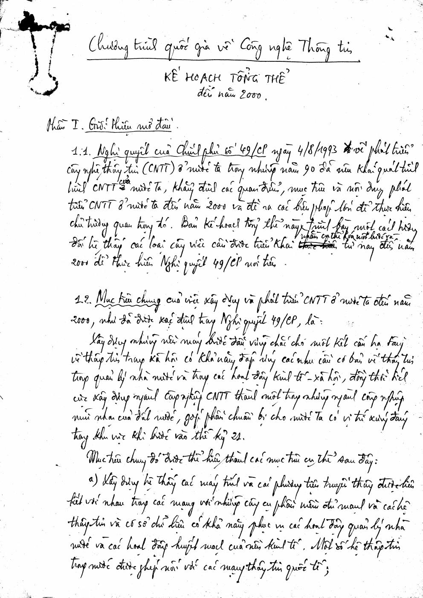
Chương trình quốc gia về Công nghệ Thông tin
KẾ HOẠCH TỔNG THỂ
đến năm 2000.
Phần I. Giới thiệu mở đầu
1.1. Nghị quyết của Chính phủ số 49/CP ngày 4/8/1993 về phát triển công nghệ thông tin (CNTT) ở nước ta trong những năm 90 đã nêu khái quát tình hình CNTT ở nước ta, khẳng định các quan điểm, mục tiêu và nội dung phát triển CNTT ở nước ta đến năm 2000 và đề ra các biện pháp lớn để thực hiện chủ trương quan trọng đó. Bản kế hoạch tổng thể này trình bày một cách hệ thống các loại công việc cần được triển khai từ nay đến năm 2000 để thực hiện Nghị quyết 49/CP nói trên.
1.2. Mục tiêu chung của việc xây dựng và phát triển CNTT ở nước ta đến năm 2000, như đã được xác định trong Nghị quyết 49/CP, là:
Xây dựng những nền móng bước đầu vững chắc cho một kết cấu hạ tầng về thông tin trong xã hội có khả năng đáp ứng các nhu cầu cơ bản về thông tin trong quản lý nhà nước và trong các hoạt động kinh tế - xã hội; đồng thời tích cực xây dựng ngành công nghiệp CNTT thành một trong những ngành công nghiệp mũi nhọn của đất nước, góp phần chuẩn bị cho nước ta có vị trí xứng đáng trong khu vực khi bước vào thế kỷ 21.
Mục tiêu chung đó được thể hiện thành các mục tiêu cụ thể sau đây:
a) Xây dựng hệ thống các máy tính và các phương tiện truyền thông được liên kết với nhau trong các mạng với những công cụ phần mềm đủ mạnh và các hệ thông tin và cơ sở dữ liệu có khả năng phục vụ các hoạt động quản lý nhà nước và các hoạt động huyết mạch của nền kinh tế. Một số hệ thống tin trong nước được ghép nối với các mạng thông tin quốc tế;
National Program on Information Technology
MASTER PLAN
to the year 2000.
Part I. Introduction
1.1. Government Resolution No. 49/CP of 4 August 1993 on the development of information technology (IT) in our country in the 1990s gave a general outline of the state of IT in our country, affirmed the viewpoints, objectives and content of IT development in our country to the year 2000, and set out the major measures to carry out that important undertaking. This master plan presents in a systematic manner the categories of work that need to be deployed from now until the year 2000 in order to implement the aforesaid Resolution 49/CP.
1.2. The general objective of building and developing IT in our country to the year 2000, as determined in Resolution 49/CP, is:
To build firm initial foundations for an information infrastructure in society capable of meeting the basic information needs in State management and in socio-economic activities; while at the same time actively building the IT industry into one of the country's spearhead industries, contributing to preparing our country to hold a worthy position in the region as it enters the 21st century.
That general objective is expressed through the following specific objectives:
a) Building a system of computers and communications means linked together in networks with sufficiently powerful software tools and information systems and databases, capable of serving State management activities and the vital (lifeline) activities of the economy. A number of domestic information systems will be interconnected with international information networks;
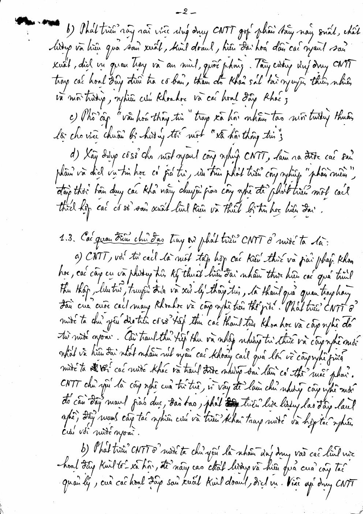
b) Phát triển rộng rãi việc ứng dụng CNTT góp phần tăng năng suất, chất lượng và hiệu quả sản xuất, kinh doanh, hiện đại hoá dần các ngành sản xuất, dịch vụ quan trọng và an ninh, quốc phòng. Tăng cường ứng dụng CNTT trong các hoạt động điều tra cơ bản, thăm dò khảo sát tài nguyên thiên nhiên và môi trường, nghiên cứu khoa học và các hoạt động khác;
c) Phổ cập "văn hoá thông tin" trong xã hội nhằm tạo môi trường thuận lợi cho việc chuẩn bị hướng tới một "xã hội thông tin".
d) Xây dựng cơ sở cho một ngành công nghiệp CNTT, làm ra được các sản phẩm và dịch vụ tin học có giá trị, ưu tiên phát triển công nghiệp "phần mềm", đồng thời tận dụng các khả năng chuyển giao công nghệ để phát triển một cách thích hợp các cơ sở sản xuất linh kiện và thiết bị tin học hiện đại.
1.3. Các quan điểm chủ đạo trong sự phát triển CNTT ở nước ta là:
a) CNTT, với tư cách là một lĩnh vực kỹ thuật - công nghệ, tuy có phạm trù bao quát rộng và có phương thức tự thân phát triển, nhưng bản chất và các quan hệ của nó thì phần lớn được quyết định bởi trình độ và sự phát triển của các lĩnh vực khác, kinh tế, xã hội. Do đó việc phát triển CNTT phải gắn liền với quá trình phát triển kinh tế - xã hội, và các lĩnh vực này thúc đẩy sự phát triển của CNTT. [?]
b) Phát triển CNTT ở nước ta chủ yếu là để nhằm ứng dụng vào các hoạt động kinh tế, khoa học kỹ thuật và xã hội, để nhằm mục đích tin học hoá và hiện đại hoá dần các quá trình sản xuất, kinh doanh, quản lý điều hành. Do đó việc phát triển CNTT phải
b) Broadly developing the application of IT, contributing to raising the productivity, quality and effectiveness of production and business, gradually modernizing important production and service branches and national security and defense. Strengthening the application of IT in basic-survey activities, prospecting and surveying of natural resources and the environment, scientific research and other activities;
c) Popularizing an "information culture" in society so as to create a favorable environment for preparing to move toward an "information society."
d) Building the basis for an IT industry, producing valuable informatics products and services, giving priority to developing the "software" industry, while at the same time making use of technology-transfer possibilities to develop, in an appropriate manner, facilities for producing modern informatics components and equipment.
1.3. The guiding viewpoints in the development of IT in our country are:
a) IT, as a technical-technological field, although it has a broad scope and its own mode of self-development, nevertheless has its nature and relations largely determined by the level and development of other fields - economic, social. Therefore the development of IT must be tied to the process of socio-economic development, and these fields drive the development of IT. [?]
b) The development of IT in our country is chiefly aimed at application in economic, scientific-technical and social activities, aimed at gradually informatizing and modernizing the processes of production, business, and management and administration. Therefore the development of IT must
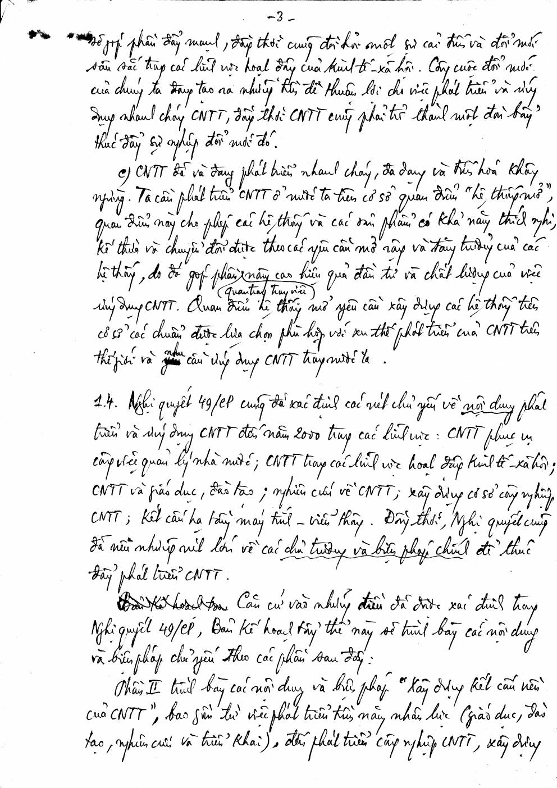
gắn liền với quá trình đẩy mạnh ứng dụng, phải coi trọng hiệu quả thiết thực của các ứng dụng, phải lấy hiệu quả kinh tế - xã hội làm tiêu chuẩn cơ bản để đánh giá và định hướng cho sự phát triển. Chính do phải nhằm mục tiêu ứng dụng có hiệu quả như vậy mà việc phát triển CNTT đòi hỏi phải gắn liền với việc cải tiến, đổi mới nội dung, phương thức, tổ chức của bản thân các hoạt động ứng dụng đó.
c) CNTT là một lĩnh vực đòi hỏi nhiều chất xám, sự đầu tư cho tiềm lực trí tuệ là quan trọng nhất và có ý nghĩa quyết định. Do đó, coi trọng đào tạo đội ngũ cán bộ, phát huy nhân tố con người là quan điểm hàng đầu trong sự phát triển CNTT. Cùng với việc đào tạo đội ngũ, phải chăm lo tạo mọi điều kiện, môi trường thuận lợi để thu hút và sử dụng đông đảo đội ngũ cán bộ CNTT.
1.4. Nghị quyết 49/CP cũng đã xác định các nội dung chủ yếu về phát triển và ứng dụng CNTT trên các lĩnh vực: các nguồn tiềm lực (nhân lực về CNTT, nghiên cứu và triển khai về CNTT, công nghiệp CNTT...); kết cấu hạ tầng về CNTT, xây dựng các mạng, cơ sở dữ liệu, tin học hoá, ứng dụng CNTT.
Bản kế hoạch tổng thể này cụ thể hoá các nội dung trong Nghị quyết 49/CP, bằng cách trình bày rõ và cụ thể hơn về nội dung và về biện pháp thực hiện các nội dung đó.
Phần II trình bày các nội dung và biện pháp "Xây dựng tiềm lực và xây dựng kết cấu hạ tầng về CNTT", bao gồm các nội dung về đào tạo (nhân lực về CNTT), về nghiên cứu và triển khai (về CNTT), xây dựng
be tied to the process of stepping up applications, must attach importance to the practical effectiveness of applications, and must take socio-economic effectiveness as the basic criterion for evaluating and orienting development. Precisely because it must aim at effective application in this way, the development of IT requires being tied to the improvement and renovation of the content, methods and organization of those application activities themselves.
c) IT is a field that demands much intellectual input; investment in intellectual potential is the most important and is of decisive significance. Therefore, attaching importance to training the corps of cadres and bringing into play the human factor is the foremost viewpoint in the development of IT. Together with training the corps, one must take care to create every favorable condition and environment to attract and employ a large corps of IT cadres.
1.4. Resolution 49/CP has also determined the principal contents regarding the development and application of IT across the fields: the potential resources (IT manpower, IT research and development, the IT industry...); the IT infrastructure, building networks, databases, informatization, and IT application.
This master plan concretizes the contents in Resolution 49/CP, by presenting more clearly and specifically the content and the measures for implementing those contents.
Part II presents the contents and measures for "Building potential and building the IT infrastructure," comprising the contents on training (IT manpower), on research and development (on IT), building
hệ thống mạng truyền thông dữ liệu quốc gia, các nội dung và biện pháp xây dựng chuẩn và thực hiện quan điểm "hệ thống mở".
Phần III trình bày các nội dung và biện pháp "Đẩy mạnh ứng dụng CNTT trong các lĩnh vực hoạt động của nhà nước và xã hội", bao gồm: CNTT trong hệ thống quản lý nhà nước, trong các khu vực hoạt động kinh tế, trong an ninh - quốc phòng, trong khu vực sản xuất công nghiệp, trong các lĩnh vực hoạt động xã hội. Phần này cũng trình bày một số đề án trọng điểm về ứng dụng CNTT, đồng thời các biện pháp thúc đẩy việc xây dựng và triển khai các đề án ứng dụng CNTT trong các ngành, các địa phương.
Phần IV trình bày hệ thống các chính sách nhằm khuyến khích và thúc đẩy việc phát triển và ứng dụng CNTT trong mọi thành phần kinh tế của xã hội.
Cuối cùng, phần V sẽ trình bày nội dung kế hoạch triển khai Chương trình trong các năm 1994-95.
the national data-communications network system, and the contents and measures for building standards and implementing the "open systems" viewpoint.
Part III presents the contents and measures for "Stepping up the application of IT in the fields of activity of the State and society," comprising: IT in the State-management system, in the areas of economic activity, in security and defense, in the industrial-production sector, and in the fields of social activity. This Part also presents a number of key projects on IT application, together with the measures to promote the building and deployment of IT-application projects in the various branches and localities.
Part IV presents the system of policies aimed at encouraging and promoting the development and application of IT in every economic sector of society.
Finally, Part V will present the content of the plan for deploying the Program in the years 1994-95.
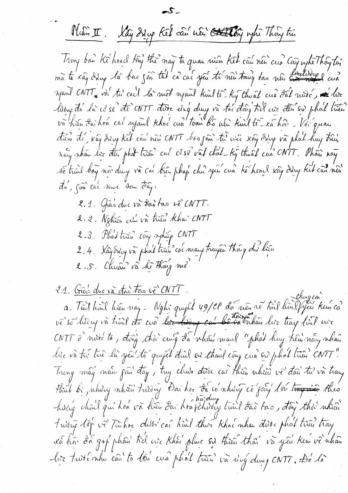
Phần II. Xây dựng kết cấu nền CNTT
Trong bản kế hoạch tổng thể này ta quan niệm kết cấu nền của Công nghệ Thông tin mà ta xây dựng là bao gồm tất cả các yếu tố nền tạo nên bản thân của ngành CNTT, với tư cách là một ngành kinh tế - kỹ thuật của đất nước, và các lực lượng đó là cơ sở để CNTT được ứng dụng và tác động tích cực đến sự phát triển và hiện đại hoá các ngành khác của toàn bộ nền kinh tế xã hội. Với quan điểm đó, xây dựng kết cấu nền CNTT bao gồm từ việc xây dựng và phát huy tiềm năng nhân lực đến phát triển các cơ sở vật chất - kỹ thuật của CNTT. Phần này sẽ trình bày nội dung và các biện pháp chủ yếu của kế hoạch xây dựng kết cấu nền đó, gồm các mục sau đây:
2.1. Giáo dục và đào tạo về CNTT
2.2. Nghiên cứu và triển khai CNTT
2.3. Phát triển công nghiệp CNTT
2.4. Xây dựng và phát triển các mạng truyền thông dữ liệu
2.5. Chuẩn và hệ thống mở
2.1. Giáo dục và đào tạo về CNTT
a. Tình hình hiện nay - Nghị quyết 49/CP đã nêu rõ tình hình yếu kém cả về số lượng và trình độ của nhân lực trong lĩnh vực CNTT ở nước ta, đồng thời cũng đã nhấn mạnh "phát huy nhân tố con người và trí tuệ là yếu tố quyết định sự thành công của sự phát triển CNTT". Trong mấy năm gần đây, tuy chưa được cải thiện nhiều về đầu tư và trang thiết bị, nhưng nhiều trường Đại học đã có những cố gắng lớn theo hướng chuẩn hoá và hiện đại hoá chương trình đào tạo, đồng thời nhiều trường lớp về Tin học dưới các hình thức khác nhau được phát triển trong xã hội đã góp phần tích cực khắc phục sự thiếu thốn và yếu kém về nhân lực trước nhu cầu to lớn của phát triển và ứng dụng CNTT. Đó là
Part II. Building the IT foundation-structure
In this master plan we understand the foundation-structure of Information Technology that we are building as comprising all the foundational elements that constitute the IT branch itself, in its capacity as an economic-technical branch of the country, and those forces are the basis for IT to be applied and to have a positive impact on the development and modernization of the other branches of the entire socio-economic system. From that viewpoint, building the IT foundation-structure ranges from building and bringing into play human-resource potential to developing the material-technical facilities of IT. This Part will present the content and the principal measures of the plan for building that foundation-structure, comprising the following sections:
2.1. Education and training in IT
2.2. Research and development in IT
2.3. Development of the IT industry
2.4. Building and developing data-communications networks
2.5. Standards and open systems
2.1. Education and training in IT
a. Present situation - Resolution 49/CP clearly pointed out the weak state, both in quantity and in level, of the manpower in the IT field in our country, while also emphasizing that "bringing into play the human factor and intellect is the decisive factor in the success of IT development." In recent years, although there has not been much improvement in investment and equipment, many universities have made great efforts toward standardizing and modernizing the training program, while at the same time many informatics schools and classes in various forms developed within society have actively contributed to overcoming the shortage and weakness of manpower in the face of the great demand of IT development and application. That is
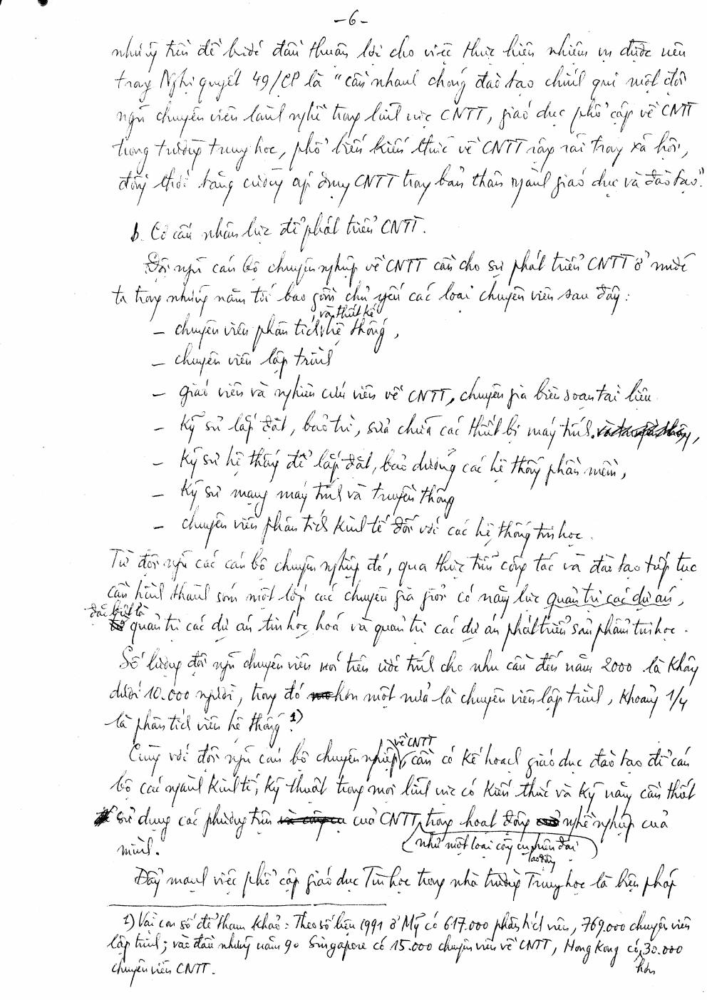
những tiền đề bước đầu thuận lợi cho việc thực hiện nhiệm vụ được nêu trong Nghị quyết 49/CP là "cần nhanh chóng đào tạo chuẩn quy một đội ngũ chuyên viên lành nghề trong lĩnh vực CNTT, giáo dục phổ cập về CNTT trong trường trung học, phổ biến kiến thức về CNTT rộng rãi trong xã hội, đồng thời tăng cường ứng dụng CNTT trong bản thân ngành giáo dục và đào tạo".
b. Cơ cấu nhân lực để phát triển CNTT.
Đội ngũ cán bộ chuyên nghiệp về CNTT cần cho sự phát triển CNTT ở nước ta trong những năm tới bao gồm chủ yếu các loại chuyên viên sau đây:
- chuyên viên phân tích và thiết kế hệ thống,
- chuyên viên lập trình,
- giáo viên và nghiên cứu viên về CNTT, chuyên gia biên soạn tài liệu,
- kỹ sư lắp đặt, bảo trì, sửa chữa các thiết bị máy tính, và các thiết bị truyền thông,
- kỹ sư hệ thống để lắp đặt, bảo dưỡng các hệ thống phần mềm,
- kỹ sư mạng máy tính và truyền thông,
- chuyên viên phân tích kinh tế đối với các hệ thống tin học.
Từ đó, các cán bộ chuyên nghiệp đó, qua thực tế công tác và đào tạo tiếp tục, có thể hình thành nên một lớp các chuyên gia giỏi có năng lực quản trị các đề án tin học hoá và quản trị các đề án phát triển sản phẩm tin học.
Số lượng đội ngũ chuyên viên nói trên ước tính cho nhu cầu đến năm 2000 là khoảng dưới 10.000 người, trong đó hơn một nửa là chuyên viên lập trình, khoảng 1/4 là phân tích viên hệ thống.¹⁾
Cùng với đội ngũ cán bộ chuyên nghiệp, cần có kế hoạch giáo dục đào tạo để các cán bộ các ngành kinh tế, kỹ thuật trong mọi lĩnh vực có kiến thức và kỹ năng cần thiết sử dụng các phương tiện của CNTT trong hoạt động nghề nghiệp của mình (như một loại công cụ lao động hiện đại).
Đẩy mạnh việc phổ cập giáo dục Tin học trong nhà trường Trung học là biện pháp
___________
¹⁾ Vài con số để tham khảo: Theo tài liệu 1991 ở Mỹ có 617.000 phân tích viên, 769.000 chuyên viên lập trình; và đầu những năm 90 Singapore có 15.000 chuyên viên về CNTT, Hong Kong có 30.000 chuyên viên CNTT.
favorable initial premises for carrying out the task set out in Resolution 49/CP, namely to "rapidly and in a standardized manner train a corps of skilled specialists in the IT field, universalize IT education in secondary schools, disseminate knowledge of IT widely in society, and at the same time strengthen the application of IT within the education and training branch itself."
b. Manpower structure for developing IT.
The corps of professional IT cadres needed for the development of IT in our country in the coming years comprises chiefly the following categories of specialists:
- systems analysis and design specialists,
- programming specialists,
- teachers and researchers in IT, documentation-compilation experts,
- engineers for installing, maintaining and repairing computer equipment, and communications equipment,
- systems engineers to install and maintain software systems,
- computer-network and communications engineers,
- economic-analysis specialists for informatics systems.
From that base, through practical work and further training, those professional cadres may form a stratum of highly skilled experts capable of managing informatization projects and informatics-product-development projects.
The number of the aforesaid corps of specialists, estimated for the demand to the year 2000, is about under 10,000 persons, of whom more than half are programming specialists and about 1/4 are systems analysts.¹⁾
Together with the corps of professional cadres, there must be an education and training plan so that cadres in the economic and technical branches in every field will have the necessary knowledge and skills to use the means of IT in their professional activity (as a kind of modern labor tool).
Stepping up the universalization of informatics education in secondary schools is a measure
___________
¹⁾ A few figures for reference: According to 1991 documents, the United States had 617,000 analysts, 769,000 programming specialists; and in the early 1990s Singapore had 15,000 IT specialists, Hong Kong had 30,000 IT specialists.
hết sức quan trọng để chuẩn bị cho thế hệ trẻ tiếp cận với các kiến thức và phương tiện hiện đại của CNTT, tạo cơ sở rộng lớn cho việc chọn lựa, đào tạo một cách nhanh chóng đội ngũ chuyên nghiệp về CNTT sau này.
c. Các biện pháp tăng cường giáo dục và đào tạo về CNTT.
Để có được nguồn nhân lực về CNTT như trình bày ở trên, cần thực hiện các biện pháp chủ yếu sau đây:
- Xây dựng mới hoặc hoàn thiện các khoa CNTT tại các Trường Đại học Tổng hợp và Bách khoa trong cả nước. Các khoa CNTT này cần được trang bị đầy đủ và hiện đại về các phương tiện máy tính và truyền thông, có nội dung chương trình đào tạo chính quy, và thu hút được vào đội ngũ giáo viên (chính nhiệm và kiêm nhiệm) các chuyên viên giỏi về CNTT trong cả nước. Ngay trong kế hoạch 1995-1996 cần xúc tiến ngay việc tăng cường (hoặc tổ chức lại) các khoa CNTT ở các trường Đại học Bách khoa Hà Nội, thành phố Hồ Chí Minh và Đà Nẵng để mỗi khoa CNTT đó có khả năng tiếp nhận hàng năm từ 100 đến 200 sinh viên mới theo chương trình học 4 năm.
- Mở hệ đào tạo chuyên nghiệp với chương trình học hai năm để đào tạo các lập trình viên máy tính và các kỹ thuật viên tin học. Hệ đào tạo này được thực hiện trong các khoa CNTT của các Trường Đại học hoặc trong các Trường đào tạo chuyên nghiệp về CNTT. Từ nay đến năm 2000, hệ đào tạo chuyên nghiệp này phải có khả năng nhận vào học hàng năm khoảng 2000 sinh viên mới.
of the utmost importance in preparing the younger generation to approach the modern knowledge and means of IT, creating a broad basis for the selection and rapid training of the professional IT corps later on.
c. Measures to strengthen education and training in IT.
In order to obtain the IT human resources as presented above, the following principal measures need to be carried out:
- Building new or perfecting existing IT faculties at the Comprehensive (General) Universities and Polytechnic Universities throughout the country. These IT faculties need to be fully and modernly equipped with computer and communications means, to have a formal training-program content, and to attract into the teaching corps (full-time and concurrent) the outstanding IT specialists throughout the country. Right within the 1995-1996 plan there is a need to immediately promote the strengthening (or reorganization) of the IT faculties at the Polytechnic Universities of Hanoi, Ho Chi Minh City and Da Nang, so that each of those IT faculties will be able to receive annually from 100 to 200 new students under a 4-year program of study.
- Opening a professional training stream with a two-year program of study to train computer programmers and informatics technicians. This training stream is carried out within the IT faculties of the Universities or within professional IT training schools. From now until the year 2000, this professional training stream must be able to admit about 2,000 new students each year.
- Cùng với việc đào tạo chuyên nghiệp tại các khoa Tin học nói trên, một phần đáng kể được bổ sung từ các nguồn đào tạo về Toán học, Điện tử, Tự động hoá, khoa học kinh tế, khoa học quản lý, v.v.
Đồng thời với việc đào tạo chuyên nghiệp tại các khoa Tin học nói trên, cần tăng cường chương trình đào tạo ứng dụng CNTT cho sinh viên học các ngành khoa học, kỹ thuật và kinh tế ngoài ngành Tin học.
- Xây dựng một số Trung tâm đào tạo nâng cao với các khoá học ngắn hạn hoặc trung hạn nhằm nâng cao trình độ, cập nhật các tri thức và phương pháp mới của CNTT hiện đại cho đội ngũ chuyên viên và giáo viên, nghiên cứu viên của ta. Với hình thức trường lớp linh hoạt và với nội dung đào tạo có tính chất chuyên đề, các trung tâm này sẽ thu hút được các chuyên gia giỏi của ta và các chuyên gia nước ngoài để giảng dạy.
Các Trung tâm đào tạo nâng cao đó được tổ chức bên cạnh các Trường Đại học, các Viện nghiên cứu, hoặc là các trung tâm độc lập do các công ty, các tổ chức phi chính phủ thành lập. Nguồn kinh phí có thể từ ngân sách nhà nước, nhưng cần khai thác các nguồn kinh phí từ mọi hình thức hợp tác với nước ngoài, từ các công ty đa quốc gia và các công ty tin học trong nước.
Trong các năm trước mắt, cần khẩn trương mở các Trung tâm đào tạo nâng cao đã có kế hoạch thành lập hoặc đang được thoả thuận thành lập như: Viện IFI (Institut Francophone d'Informatique) do cộng đồng các quốc gia nói tiếng Pháp tài trợ, các Trường nâng cao trong quản lý hợp tác với Pháp, Canada, Úc, với các công ty như IBM, DEC, Compaq, v.v.
- Để khắc phục cấp bách tình trạng thiếu các giáo viên và chuyên gia chủ chốt cho các chương trình giáo dục và các đề án ứng dụng, cần có kế hoạch gửi các chuyên viên của ta đi học các lớp đào tạo lại hoặc nâng cao ở nước ngoài, đồng thời với việc tuyển chọn các sinh viên giỏi đi học ở các nước phát triển.
- Together with the professional training at the aforesaid informatics faculties, a considerable part is supplemented from training sources in Mathematics, Electronics, Automation, economic sciences, management sciences, etc.
At the same time as the professional training at the aforesaid informatics faculties, there is a need to strengthen the IT-application training program for students studying the sciences, engineering and economics outside the informatics field.
- Building a number of advanced-training Centers with short-term or medium-term courses aimed at raising the level and updating the new knowledge and methods of modern IT for our corps of specialists, teachers and researchers. With a flexible school-class form and with training content of a thematic character, these centers will be able to attract our outstanding experts and foreign experts to teach.
Those advanced-training Centers are organized alongside the Universities, the research Institutes, or as independent centers established by companies and non-governmental organizations. The funding source may come from the State budget, but it is necessary to exploit funding sources from every form of cooperation with foreign countries, from multinational companies and domestic informatics companies.
In the immediate years ahead, there is a need to urgently open the advanced-training Centers that have already been planned or are being agreed upon, such as: the IFI Institute (Institut Francophone d'Informatique) funded by the community of French-speaking nations, the advanced schools in management in cooperation with France, Canada, Australia, and with companies such as IBM, DEC, Compaq, etc.
- In order to urgently overcome the shortage of key teachers and experts for the education programs and application projects, there is a need for a plan to send our specialists abroad to attend retraining or advanced-training classes, together with selecting outstanding students to study in developed countries.
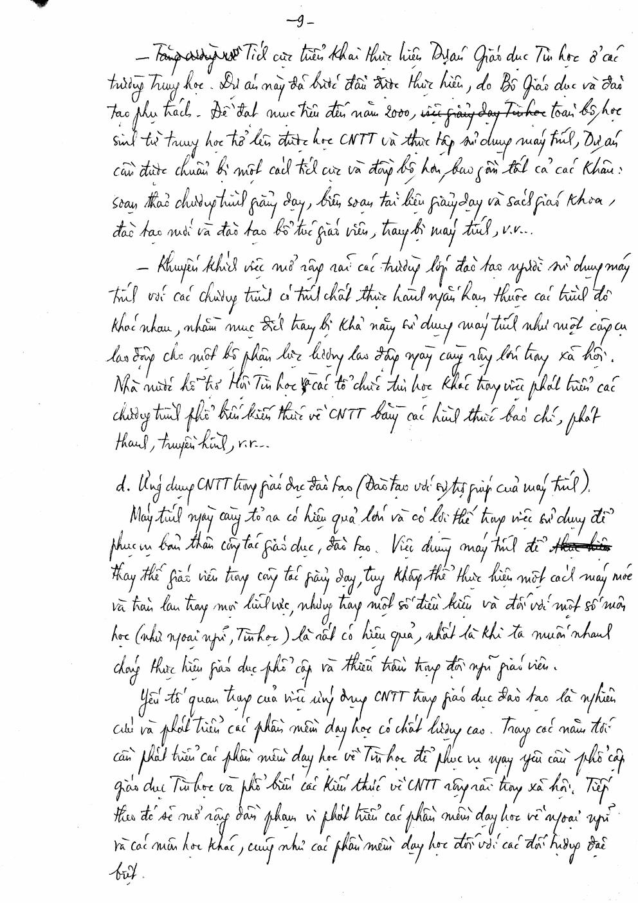
- Tích cực triển khai tiếp tục việc thực hiện Dự án Giáo dục Tin học ở các trường Trung học. Dự án này đã bước đầu được thực hiện, do Bộ Giáo dục và Đào tạo phụ trách. Để đạt mục tiêu đến năm 2000, việc giảng dạy Tin học được phổ cập, học sinh từ trung học trở lên đều được học CNTT và thực tập sử dụng máy tính. Dự án cần được chuẩn bị một cách tích cực và đồng bộ hơn, bao gồm tất cả các khâu: soạn thảo chương trình giảng dạy, biên soạn tài liệu giảng dạy và sách giáo khoa, đào tạo mới và đào tạo bổ túc giáo viên, trang bị máy tính, v.v...
- Khuyến khích việc mở các trường lớp đào tạo người sử dụng máy tính với các chương trình có tính chất thực hành ngắn hạn thuộc các trình độ khác nhau, nhằm mục đích trang bị khả năng sử dụng máy tính như một công cụ lao động cho một bộ phận lực lượng lao động ngày càng rộng lớn trong xã hội. Nhà nước hỗ trợ Hội Tin học và các tổ chức tin học khác trong việc phát triển các chương trình phổ biến kiến thức về CNTT bằng các hình thức báo chí, phát thanh, truyền hình, v.v...
d. Ứng dụng CNTT trong giáo dục đào tạo (Đào tạo với sự trợ giúp của máy tính).
Máy tính ngày càng tỏ ra có hiệu quả lớn và có lợi thế trong việc sử dụng để phục vụ bản thân công tác giáo dục, đào tạo. Việc dùng máy tính để thay thế giáo viên trong công tác giảng dạy tuy không thể thực hiện một cách máy móc và tràn lan trong mọi lĩnh vực, nhưng trong một số điều kiện và đối với một số môn học (như ngoại ngữ, Tin học) là rất có hiệu quả, nhất là khi ta muốn nhanh chóng thực hiện giáo dục phổ cập và thiếu thầy trong đội ngũ giáo viên.
Yếu tố quan trọng của việc ứng dụng CNTT trong giáo dục đào tạo là nghiên cứu và phát triển các phần mềm dạy học có chất lượng cao. Trong các năm tới cần phát triển các phần mềm dạy học về Tin học để phục vụ ngay yêu cầu phổ cập giáo dục Tin học và phổ biến các kiến thức về CNTT rộng rãi trong xã hội. Tiếp theo đó sẽ mở rộng dần phạm vi phát triển các phần mềm dạy học về ngoại ngữ và các môn học khác, cũng như các phần mềm dạy học đối với các đối tượng đặc biệt.
- Actively continue the implementation of the Informatics Education Project in secondary schools. This project has begun to be implemented, under the charge of the Ministry of Education and Training. To reach the target for the year 2000, the teaching of informatics is universalized, whereby pupils from secondary level upwards all study IT and practise using computers. The project needs to be prepared in a more active and coordinated manner, covering all stages: drafting the teaching curriculum, compiling teaching materials and textbooks, training new teachers and providing supplementary training for teachers, equipping computers, etc.
- Encourage the opening of schools and classes to train computer users, with short practical programs at various levels, aiming to equip an ever-larger portion of the labour force in society with the ability to use computers as a working tool. The State supports the Informatics Association and other informatics organizations in developing programs to disseminate knowledge of IT through the press, radio, television, etc.
d. Application of IT in education and training (Training with the assistance of the computer).
The computer increasingly proves highly effective and advantageous when used to serve the work of education and training itself. Using the computer to replace teachers in teaching work, although it cannot be done mechanically and indiscriminately in every field, is nevertheless very effective under certain conditions and for certain subjects (such as foreign languages, informatics), especially when we wish to rapidly achieve universal education and there is a shortage of teachers.
An important factor in applying IT in education and training is the research and development of high-quality teaching software. In the coming years, teaching software for informatics must be developed to serve the immediate need for universal informatics education and the broad dissemination of IT knowledge in society. Following that, the scope of developing teaching software will gradually be extended to foreign languages and other subjects, as well as teaching software for special target groups.
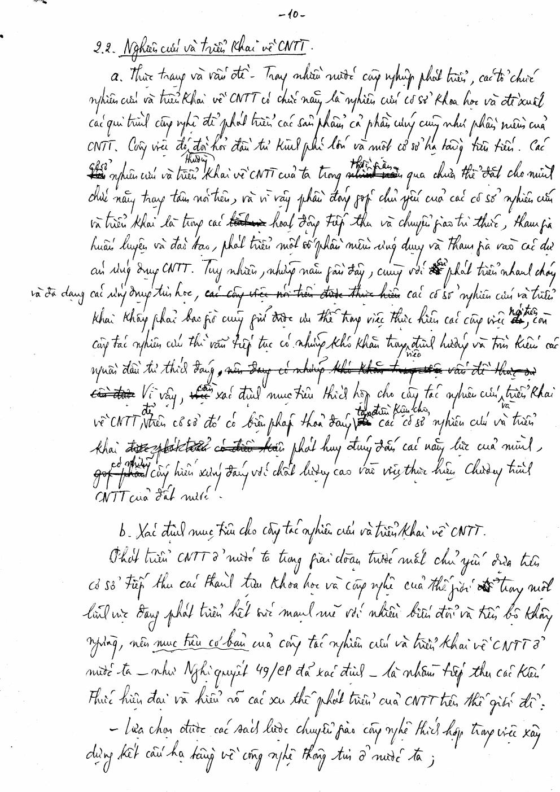
3/ Nghiên cứu và triển khai về CNTT.
a. Xác định mục tiêu cho công tác nghiên cứu và triển khai về CNTT.
Mục tiêu cơ bản của công tác nghiên cứu và triển khai về CNTT ở nước ta - như Nghị quyết 49/CP đã xác định - là nhằm tiếp thu các kiến thức hiện đại và hiểu rõ các xu thế phát triển của CNTT trên thế giới để:
- Có khả năng lựa chọn các sách lược chuyển giao công nghệ thích hợp trong việc xây dựng kết cấu hạ tầng về CNTT ở nước ta.
3/ Research and development in IT.
a. Defining the objectives for research and development work in IT.
The basic objective of research and development work in IT in our country - as determined by Resolution 49/CP - is to absorb modern knowledge and clearly understand the development trends of IT in the world in order to:
- Be able to select appropriate technology-transfer strategies in building the IT infrastructure in our country.
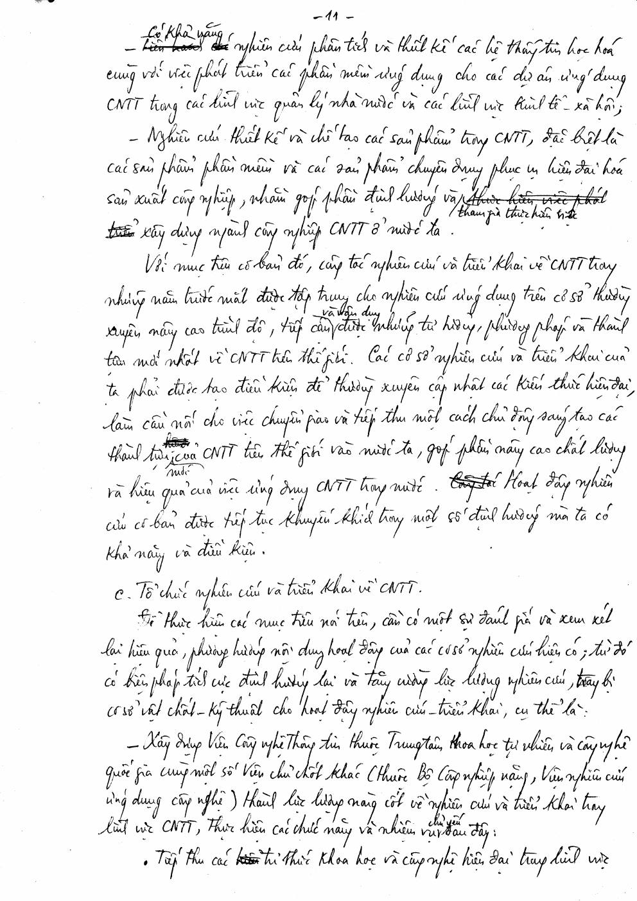
- Có khả năng nghiên cứu phân tích và thiết kế các hệ thống tin học hoá cùng với việc phát triển các phần mềm ứng dụng cho các dự án ứng dụng CNTT trong các lĩnh vực quản lý nhà nước và các lĩnh vực kinh tế - xã hội;
- Nghiên cứu thiết kế và chế tạo các sản phẩm trong CNTT, đặc biệt là các sản phẩm phần mềm và các sản phẩm chuyên dụng phục vụ hiện đại hoá sản xuất công nghiệp, nhằm góp phần định hướng và tham gia thực hiện xây dựng ngành công nghiệp CNTT ở nước ta.
Với mục tiêu cơ bản đó, công tác nghiên cứu và triển khai về CNTT trong những năm trước mắt được tập trung cho nghiên cứu ứng dụng, tạo tiềm lực thực hiện tốt việc chuyển giao tri thức, phương pháp và thành tựu mới nhất về CNTT trên thế giới. Các cơ sở nghiên cứu và triển khai của ta phải được tạo điều kiện để thường xuyên cập nhật các kiến thức hiện đại, làm cầu nối cho việc chuyển giao và tiếp thu một cách chủ động sáng tạo các thành tựu mới của CNTT trên thế giới vào nước ta, góp phần nâng cao chất lượng và hiệu quả của việc ứng dụng CNTT trong nước. Hoạt động nghiên cứu cơ bản được tiếp tục khuyến khích trong một số định hướng mà ta có khả năng và điều kiện.
c. Tổ chức nghiên cứu và triển khai về CNTT.
Để thực hiện các mục tiêu nói trên, cần có một sự đánh giá và xem xét lại hiệu quả, phương hướng, nội dung hoạt động của các cơ sở nghiên cứu hiện có; từ đó có biện pháp tích cực định hướng lại và tăng cường lực lượng nghiên cứu, trang bị cơ sở vật chất - kỹ thuật cho hoạt động nghiên cứu - triển khai, cụ thể là:
- Xây dựng Viện Công nghệ Thông tin thuộc Trung tâm khoa học tự nhiên và công nghệ quốc gia cùng một số Viện chủ chốt khác (thuộc Bộ Công nghiệp nặng, các viện nghiên cứu ứng dụng công nghệ) thành lực lượng nòng cốt về nghiên cứu và triển khai trong lĩnh vực CNTT, thực hiện các nhiệm vụ:
• Tiếp thu các tri thức khoa học và công nghệ hiện đại trong lĩnh vực
- Be able to research, analyse and design informatized systems together with developing application software for IT-application projects in the fields of State management and the socio-economic fields;
- Research, design and manufacture products in IT, especially software products and specialized products serving the modernization of industrial production, so as to contribute to orienting and participating in building the IT industry in our country.
With that basic objective, research and development work in IT in the immediate years ahead is focused on applied research, building the capacity to carry out well the transfer of the latest knowledge, methods and achievements in IT in the world. Our research and development establishments must be given the conditions to regularly update modern knowledge, serving as a bridge for the active and creative transfer and absorption of the new achievements of IT in the world into our country, contributing to raising the quality and effectiveness of the application of IT domestically. Basic research activity continues to be encouraged in a number of orientations for which we have the capacity and conditions.
c. Organization of research and development in IT.
To achieve the aforementioned objectives, there needs to be an evaluation and review of the effectiveness, direction and content of the activities of existing research establishments; on that basis, active measures to reorient and strengthen the research forces and to equip the material and technical facilities for research-and-development activity, specifically:
- Build the Institute of Information Technology under the National Centre for Natural Science and Technology, together with a number of other key institutes (under the Ministry of Heavy Industry, applied-technology research institutes), into the core force for research and development in the field of IT, carrying out the tasks:
• Absorbing modern scientific and technological knowledge in the field of
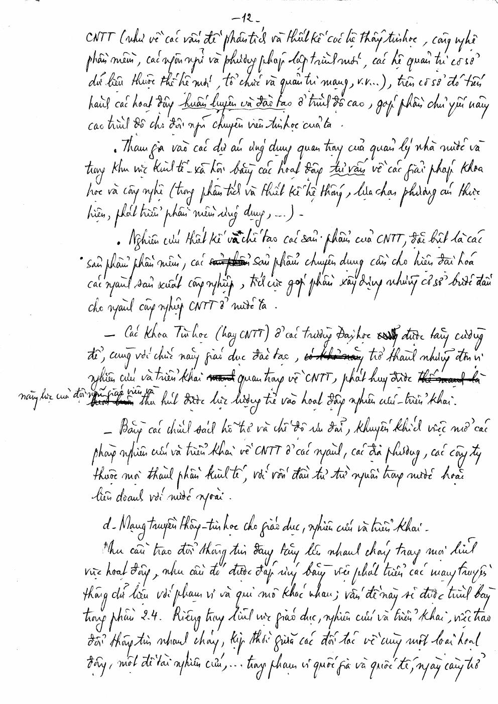
CNTT (như về các vấn đề phân tích và thiết kế các hệ thống tin học, công nghệ phần mềm, các ngôn ngữ và phương pháp lập trình mới, các hệ quản trị cơ sở dữ liệu thuộc thế hệ mới, tổ chức và quản trị mạng, v.v...), trên cơ sở đó tiến hành các hoạt động huấn luyện và đào tạo ở trình độ cao, góp phần chủ yếu nâng cao trình độ cho đội ngũ chuyên viên tin học của ta.
• Tham gia vào các dự án ứng dụng quan trọng của quản lý nhà nước và trong khu vực kinh tế - xã hội bằng các hoạt động tư vấn về các giải pháp khoa học và công nghệ (trong phân tích và thiết kế hệ thống, lựa chọn phương án thực hiện, phát triển phần mềm ứng dụng, ...).
• Nghiên cứu thiết kế và chế tạo các sản phẩm của CNTT, đặc biệt là các sản phẩm phần mềm, các sản phẩm chuyên dụng cần cho hiện đại hoá các ngành sản xuất công nghiệp, tiến tới góp phần xây dựng những cơ sở bước đầu cho ngành công nghiệp CNTT ở nước ta.
- Các Khoa Tin học (hay CNTT) ở các trường Đại học được tăng cường để, cùng với chức năng giáo dục đào tạo, trở thành những đơn vị nghiên cứu và triển khai quan trọng về CNTT, phát huy được năng lực của đội ngũ giáo viên và thu hút được lực lượng trẻ vào hoạt động nghiên cứu - triển khai.
- Bằng các chính sách hỗ trợ và chế độ ưu đãi, khuyến khích việc mở các phòng nghiên cứu và triển khai về CNTT ở các ngành, các địa phương, các công ty thuộc mọi thành phần kinh tế, với vốn đầu tư từ nguồn trong nước hoặc liên doanh với nước ngoài.
d. Mạng truyền thông tin học cho giáo dục, nghiên cứu và triển khai.
Nhu cầu trao đổi thông tin ngày càng tăng nhanh giữa những người cùng hoạt động trong một loại hình hoạt động; nhu cầu đó được đáp ứng bằng việc phát triển các mạng truyền thông dữ liệu với phạm vi và quy mô khác nhau; vấn đề này sẽ được trình bày trong phần 2.4. Riêng trong lĩnh vực giáo dục, nghiên cứu và triển khai, việc trao đổi thông tin nhanh chóng, kịp thời giữa các đối tác về cùng một loại hoạt động, một đề tài nghiên cứu, ... trong phạm vi quốc gia và quốc tế, ngày càng tỏ
IT (such as the problems of analysing and designing informatics systems, software engineering, new programming languages and methods, next-generation database management systems, network organization and management, etc.), and on that basis conducting training and education activities at a high level, contributing substantially to raising the level of our corps of informatics specialists.
• Participating in important application projects of State management and in the socio-economic sphere through consultancy activities on scientific and technological solutions (in system analysis and design, selection of implementation options, development of application software, ...).
• Researching, designing and manufacturing IT products, especially software products, specialized products needed for the modernization of industrial production sectors, moving towards contributing to building the initial foundations for the IT industry in our country.
- The Informatics (or IT) Faculties at universities are strengthened so that, together with their education and training function, they become important research and development units in IT, bringing into play the capacity of the teaching staff and drawing young forces into research-and-development activity.
- Through support policies and preferential regimes, encourage the opening of IT research and development laboratories in the sectors, localities and companies of all economic sectors, with investment capital from domestic sources or joint ventures with foreign partners.
d. Informatics communication network for education, research and development.
The need to exchange information is growing ever more rapidly among those working in the same type of activity; that need is met by developing data-communication networks of varying scope and scale; this matter will be presented in section 2.4. Specifically in the field of education, research and development, the rapid and timely exchange of information between partners in the same type of activity, a research topic, ... within the national and international scope, increasingly proves
thành một nhu cầu thường xuyên, một yếu tố rất quan trọng để tăng nhanh năng suất và hiệu quả. Để đáp ứng nhu cầu đó, cần khẩn trương xây dựng mạng truyền thông dữ liệu cho giáo dục, nghiên cứu và triển khai trong nước (gọi tắt là VERDNet) theo các thủ tục và chuẩn của Internet và qua một cửa khẩu chung nối được với mạng Internet quốc tế.
Mạng Internet được xây dựng tại Mỹ từ những năm 70 và sau đó được mở rộng rất nhanh, nối hàng trăm các mạng vùng, mạng quốc gia trên toàn thế giới với hàng chục triệu người dùng, đặc biệt là trong các trường đại học, các viện nghiên cứu, và đã mở rộng ra các cơ quan chính phủ, các công ty kinh doanh, các tổ chức hoạt động xã hội, v.v... Internet đang trở thành một "xa lộ thông tin" cung cấp một khối lượng không hạn chế thông tin các loại cho người dùng trên toàn thế giới, một phương tiện tin cậy và thuận lợi để mọi người trao đổi thông tin dễ dàng, nhanh chóng với các đối tác, đồng nghiệp chuyên môn, kể cả trao đổi và sử dụng chung các kết quả nghiên cứu, các phần mềm và các dịch vụ khác. Mạng VERDNet được xây dựng và được nối với Internet sẽ tạo điều kiện cho giới giáo dục, nghiên cứu và triển khai của ta trao đổi thông tin với nhau và với đồng nghiệp quốc tế dễ dàng, qua việc sử dụng dịch vụ thư tín điện tử, được truy cập đến các nguồn tư liệu phong phú trên thế giới trên nhiều lĩnh vực, đặc biệt là CNTT, v.v... từ đó sẽ tạo ra một nguồn kích thích và cơ sở mạnh lớn cho hoạt động nghiên cứu triển khai.
Mạng VERDNet sẽ được xây dựng và mở rộng theo nhiều giai đoạn, cần bắt đầu ngay giai đoạn 1 từ năm 1994 (với việc sử dụng đường truyền dữ liệu có sẵn và các máy vi tính / modem).
Kinh phí xây dựng mạng VERDNet sẽ không lớn lắm, vì chủ yếu dựa vào mạng truyền thông dữ liệu chung và các trang thiết bị tin học vốn có của các cơ sở. Một số tổ chức nước ngoài (như SIDA Thuỵ Điển, Úc) có thể tham gia hỗ trợ giúp việc trang bị các nút mạng và nối với Internet quốc tế.
a regular necessity, a very important factor for rapidly increasing productivity and effectiveness. To meet that need, it is necessary to urgently build a data-communication network for domestic education, research and development (abbreviated VERDNet) following the procedures and standards of the Internet and, through a common gateway, able to connect to the international Internet network.
The Internet network was built in the USA in the 1970s and was thereafter expanded very rapidly, linking hundreds of regional networks and national networks throughout the world with tens of millions of users, especially in universities and research institutes, and has expanded to government agencies, business companies, social-activity organizations, etc. The Internet is becoming an "information superhighway" providing an unlimited volume of information of all kinds to users throughout the world, a reliable and convenient means for everyone to exchange information easily and quickly with partners and professional colleagues, including exchanging and sharing research results, software and other services. The VERDNet network, once built and connected to the Internet, will create the conditions for our education, research and development community to exchange information with one another and with international colleagues easily, through the use of electronic-mail service, gaining access to the rich sources of documentation in the world in many fields, especially IT, etc.; this will thereby create a source of stimulation and a strong foundation for research-and-development activity.
The VERDNet network will be built and expanded in several phases; phase 1 needs to begin immediately, from 1994 (using existing data-transmission lines and microcomputers / modems).
The cost of building the VERDNet network will not be very large, because it relies chiefly on the common data-communication network and the informatics equipment that the establishments already possess. A number of foreign organizations (such as SIDA of Sweden, Australia) may take part in supporting and assisting the equipping of network nodes and the connection to the international Internet.
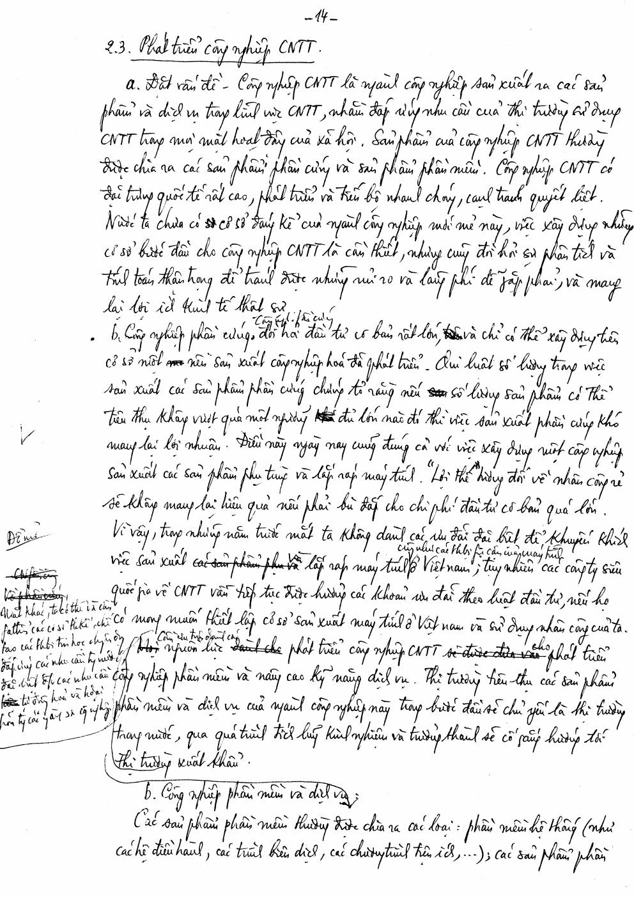
2.3. Phát triển công nghiệp CNTT.
a. Nội dung phát triển công nghiệp CNTT ở nước ta:
Công nghiệp CNTT là ngành công nghiệp mũi nhọn, nhưng đối với nước ta còn là mới mẻ, vì vậy việc xây dựng công nghiệp CNTT cần được tiến hành một cách tích cực, đồng thời cần được phân tích và tính toán thận trọng để tránh những rủi ro và lãng phí dễ gặp phải. Cần ưu tiên cho việc phát triển công nghệ phần mềm và nâng cao kỹ năng dịch vụ.
[Ở đây nhiều đoạn bị gạch xoá và viết lại; nội dung tương ứng phần công nghiệp phần mềm: thị trường trong nước và hướng tới xuất khẩu, phát triển lực lượng làm phần mềm, các phần mềm đáp ứng nhu cầu riêng như xử lý văn bản và dữ liệu tiếng Việt, các phần mềm thay thế nhập khẩu.] [?]
b. Các biện pháp khuyến khích phát triển công nghiệp CNTT.
Các Viện nghiên cứu và triển khai, các cơ sở tin học trong trường Đại học và các công ty tin học trong nước được khuyến khích phát triển phần mềm ứng dụng bằng các điều kiện thuận lợi và ưu đãi trong việc tham gia đấu thầu thực hiện các sản phẩm phần mềm cho các đề án ứng dụng CNTT trong hệ thống quản lý Nhà nước cũng như trong các khu vực khác của kinh tế - xã hội.
2.3. Development of the IT industry.
a. The content of developing the IT industry in our country:
The IT industry is a spearhead industry, but for our country it is still new; therefore the building of the IT industry needs to be carried out actively, while at the same time being analysed and calculated prudently so as to avoid the risks and waste that are easily encountered. Priority must be given to developing software technology and raising service skills.
[Here several passages are crossed out and rewritten; the content corresponds to the software-industry section: the domestic market and orientation towards export, developing the software workforce, software meeting special needs such as Vietnamese-language text and data processing, and import-substitution software.] [?]
b. Measures to encourage the development of the IT industry.
Research and development institutes, informatics establishments in universities, and domestic informatics companies are encouraged to develop application software through favourable conditions and preferences in participating in tenders to produce software products for IT-application projects in the State management system as well as in other areas of the socio-economy.
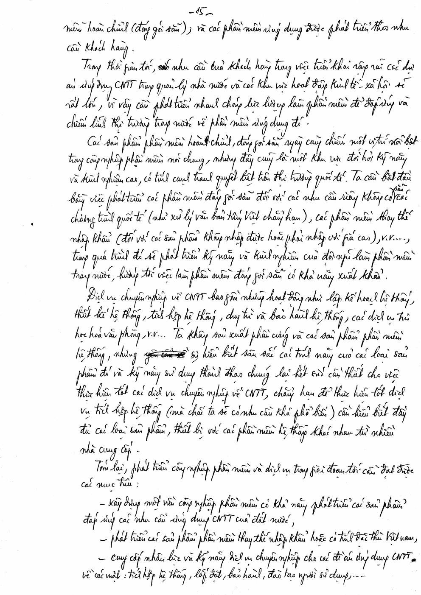
... (như xử lý văn bản và dữ liệu tiếng Việt), các phần mềm thay thế nhập khẩu (đối với các sản phẩm không nhập được hoặc phải nhập với giá quá cao), v.v... và các phần mềm ứng dụng những dạng đặc biệt đối với thị trường.
Trong thời gian tới, cần phát triển nhanh chóng lực lượng làm phần mềm để đáp ứng nhu cầu ứng dụng CNTT trong quản lý nhà nước cùng các lĩnh vực kinh tế - xã hội và để chiếm lĩnh thị trường trong nước về phần mềm ứng dụng.
Các dịch vụ tin học ngày càng đóng vai trò quan trọng, đáp ứng nhu cầu ngày càng lớn của thị trường ứng dụng CNTT trong nước. Cần phát triển nhanh ngành dịch vụ chuyên nghiệp về CNTT, gồm các dịch vụ về lập kế hoạch hệ thống, thiết kế hệ thống, tích hợp hệ thống, duy trì và bảo hành hệ thống, các dịch vụ tin học hoá văn phòng, ...
Đối với công nghiệp phần cứng, đòi hỏi đầu tư cơ bản lớn, và được xây dựng trên cơ sở một nền sản xuất công nghiệp hoá đã phát triển, trong những năm trước mắt ta cần tận dụng các khả năng hợp tác liên doanh và chuyển giao công nghệ để phát triển một số cơ sở sản xuất, lắp ráp thiết bị tin học theo những phương án được tính toán là có lợi nhuận, đồng thời phát triển các cơ sở thiết kế, chế tạo các thiết bị truyền thông và thiết bị tin học chuyên dụng đáp ứng các nhu cầu trong nước, đặc biệt đối với các nhu cầu truyền thông dữ liệu, tự động hoá và hiện đại hoá trong các ngành sản xuất công nghiệp.
Cần đầu tư cho việc đào tạo cán bộ để phát triển hướng "công nghiệp phần cứng dựa trên phần mềm" là một hướng thích hợp và có nhiều triển vọng hiện nay.
Các biện pháp khuyến khích phát triển công nghiệp CNTT bao gồm:
- Khuyến khích và hỗ trợ việc thành lập một số trung tâm phát triển phần mềm (trong một số trường hợp có sự trợ cấp ban đầu của Ngân sách Nhà nước), hoạt động độc lập hoặc nằm trong các viện, trường, công ty tin học.
- Giúp đỡ việc thành lập và hỗ trợ các hoạt động của một hiệp hội các nhà sản xuất phần mềm ...
... (such as Vietnamese-language text and data processing), import-substitution software (for products that cannot be imported or that must be imported at too high a price), etc., and application software of special forms for the market.
In the coming period, it is necessary to rapidly develop the software workforce to meet the demand for applying IT in State management together with the socio-economic fields, and to capture the domestic market for application software.
Informatics services play an increasingly important role, meeting the ever-growing demand of the domestic IT-application market. It is necessary to rapidly develop the professional IT service industry, comprising services in system planning, system design, system integration, system maintenance and warranty, office-informatization services, ...
As for the hardware industry, which requires large basic investment and is built on the basis of an already-developed industrialized production base, in the immediate years ahead we need to make use of the possibilities of joint-venture cooperation and technology transfer to develop a number of establishments producing and assembling informatics equipment along options calculated to be profitable, while also developing establishments to design and manufacture communication equipment and specialized informatics equipment meeting domestic needs, especially the needs of data communication, automation and modernization in the industrial production sectors.
It is necessary to invest in staff training to develop the direction of "software-based hardware industry", which is an appropriate direction with much promise at present.
The measures to encourage the development of the IT industry include:
- Encourage and support the establishment of a number of software-development centres (in some cases with initial subsidy from the State Budget), operating independently or located within informatics institutes, universities and companies.
- Assist in the establishment and support the activities of an association of software producers ...
... để khuyến khích việc trao đổi các ý tưởng, kinh nghiệm và tổ chức các hoạt động tập thể như semina, đào tạo, tham gia các đoàn thương mại làm quen với việc hợp đồng và các luật lệ trong trao đổi hàng hoá phần mềm, v.v...
c. Chính sách phần cứng.
[Đoạn này tương ứng phần về công ty siêu quốc gia và các biện pháp chính sách hỗ trợ công nghiệp phần cứng; phần lớn bị gạch và viết lại, nhiều chú thích ở lề trái.] [?]
- Xây dựng một khu công nghiệp CNTT trong khu công nghệ cao, cùng với việc triển khai thực hiện một dự án công nghiệp phần mềm hướng xuất khẩu, xem như một bước thí điểm và chuẩn bị tích cực cho một nền công nghiệp phần mềm xuất khẩu có thể có trong tương lai. Dự án này được thực hiện thông qua chuyển giao công nghệ với sự phối hợp, cộng tác của các chuyên gia nước ngoài và người Việt ở nước ngoài.
Để hỗ trợ tích cực cho việc phát triển nhanh chóng công nghiệp CNTT, đặc biệt là công nghiệp phần mềm, cần quy định một số chính sách cần thiết như miễn thuế hoặc ưu đãi với thuế suất thấp cho các sản phẩm phần mềm, bảo vệ quyền sở hữu trí tuệ đối với các sản phẩm phần mềm, trợ giúp xuất khẩu, khuyến khích và hỗ trợ tài chính cho việc đào tạo, gửi người đi học nước ngoài tham gia các sinh hoạt học thuật quốc tế, khuyến khích và tạo điều kiện thuận lợi cho chuyên viên Việt Nam ở nước ngoài về nước hợp tác, giúp các trung tâm phần mềm khởi đầu hoạt động bằng cách Nhà nước góp cổ phần, cho các khoản trợ cấp và tín dụng ưu đãi, giúp tìm bạn hàng liên doanh, v.v...
... in order to encourage the exchange of ideas and experience and to organize collective activities such as seminars, training, participation in trade delegations to become familiar with contracting and the rules in the exchange of software goods, etc.
c. Hardware policy.
[This passage corresponds to the section on the supranational companies and the policy measures supporting the hardware industry; much of it is struck out and rewritten, with many marginal notes in the left margin.] [?]
- Build an IT industrial zone within the high-technology park, together with implementing an export-oriented software-industry project, regarded as a pilot step and active preparation for a possible export software industry in the future. This project is carried out through technology transfer with the coordination and collaboration of foreign experts and overseas Vietnamese.
To actively support the rapid development of the IT industry, especially the software industry, it is necessary to prescribe a number of necessary policies such as tax exemption or preferential low tax rates for software products, protection of intellectual property rights for software products, export assistance, encouragement and financial support for training, sending people to study abroad and take part in international academic activities, encouraging and creating favourable conditions for Vietnamese specialists abroad to return home to cooperate, helping software centres begin operations by the State contributing shares, granting subsidies and preferential credit, helping to find joint-venture partners, etc.
2.4. Truyền thông dữ liệu.
a. Tình hình và nhu cầu đối với truyền thông dữ liệu.
Truyền thông dữ liệu ở Việt Nam đang trong giai đoạn hình thành. Trong mấy năm gần đây, các nhu cầu truyền thông dữ liệu đã bắt đầu phát triển mạnh cùng với việc triển khai các hệ thống tin học trong các ngành Ngân hàng, Tài chính, Thương mại. Ngành Bưu điện đã khởi đầu việc thiết lập mạng VIETPAC X.25 với đường cáp sợi quang và cung cấp các dịch vụ truyền dữ liệu chuyển mạch gói công cộng. Mạng này khi được hoàn thành và được kết nối với mạng điện thoại tự động đã được số hoá, sẽ cung cấp một phương tiện quan trọng để triển khai các mạng truyền dữ liệu cho các dự án ứng dụng CNTT trong các ngành kinh tế - xã hội.
Việc ứng dụng nhanh chóng CNTT trong các hệ thống quản lý nhà nước và trong việc hiện đại hoá kết cấu hạ tầng về thông tin của đất nước đòi hỏi xây dựng và triển khai nhiều dự án có phạm vi quốc gia; các dự án này đều có các nhu cầu to lớn tiềm tàng về truyền thông dữ liệu. Trong giai đoạn đầu cần ưu tiên đáp ứng các nhu cầu truyền thông dữ liệu trong các lĩnh vực quản lý nhà nước, phát triển kinh tế thị trường, giáo dục và nghiên cứu triển khai.
- Quản lý nhà nước: các yêu cầu truyền thông dữ liệu trong các cơ quan nhà nước, ở Trung ương và với các địa phương, thực hiện các thủ tục điện tử, thư tín và báo cáo các thông tin về thị trường, v.v...
- Khu vực tài chính - ngân hàng, thương mại: truyền thông dữ liệu trong
2.4. Data communication.
a. Situation and needs regarding data communication.
Data communication in Vietnam is in its formative stage. In the last few years, data communication needs have begun to develop strongly together with the deployment of information-technology systems in the Banking, Finance and Trade sectors. The Postal sector has begun to establish the VIETPAC X.25 network with fibre-optic cable and to provide public packet-switched data-transmission services. When this network is completed and connected to the digitized automatic telephone network, it will provide an important means for deploying data-transmission networks for the projects applying IT in the socio-economic sectors.
The rapid application of IT in the State management systems and in modernizing the country's information infrastructure requires the building and deployment of many projects of national scope, and all of these projects have huge latent needs for data communication. In the initial phase, priority should be given to meeting the data-communication needs in the fields of State management, market-economy development, education and research and development.
- State management: the requirements for data communication within State agencies, at the central level and with the localities, carrying out electronic procedures, mail, and reporting of information about the market, etc.
- The finance - banking, trade sector: data communication within
... hỗ trợ cho các giao dịch tài chính, các dịch vụ thanh toán liên ngân hàng, các báo cáo giữa các đơn vị, từ Trung ương đến địa phương của các Bộ, ngành đó, v.v...
- Nhu cầu của giới giáo dục, nghiên cứu và triển khai - tạo điều kiện trao đổi thông tin, thảo luận nhanh với các tổ chức giáo dục, nghiên cứu triển khai và cùng chuyển thông tin nhanh chóng, kịp thời với các đồng nghiệp trong nước cũng như với đồng nghiệp ở nước ngoài (có thể qua các mạng thông tin quốc tế như Internet).
Nhu cầu về truyền thông dữ liệu cũng sẽ gia tăng nhanh khi nền kinh tế và đất nước ta gia nhập sâu rộng hơn vào cộng đồng quốc tế.
b. Mô tả dự án về truyền thông dữ liệu quốc gia.
Mạng truyền thông dữ liệu quốc gia có nhiệm vụ, trên nền của mạng truyền dẫn chung do ngành bưu chính viễn thông xây dựng, phát triển hệ thống các dịch vụ cơ bản về truyền thông dữ liệu, nhằm cung cấp cơ sở hạ tầng, dịch vụ cho mọi nhu cầu truyền thông dữ liệu trong xã hội. Đây cũng chính là mục tiêu và nhiệm vụ của dự án về truyền thông dữ liệu mà ngành bưu điện đang triển khai. Mạng sẽ có khả năng cung cấp các dịch vụ truyền thông dữ liệu theo các phương thức khác nhau.
Có thể hình dung mạng truyền thông dữ liệu và các loại dịch vụ truyền dữ liệu cho phép người sử dụng lựa chọn dịch vụ tuỳ theo nhu cầu, có thể từ việc truyền các tệp dữ liệu theo cách điểm nối điểm hoặc đa điểm, trao đổi dữ liệu tức thời, đến việc tổ chức các cơ sở dữ liệu phân tán, nối các mạng cục bộ (LAN) để tạo thành mạng miền rộng (WAN), tổ chức mạng thư tín điện tử, v.v...
... supporting financial transactions, inter-bank payment services, reports between units, from the central level down to the localities of those Ministries and sectors, etc.
- Needs of the education, research and development community - creating conditions for exchanging information and rapid discussion with educational, research and development organizations, and transmitting information quickly and in a timely manner with colleagues within the country as well as with colleagues abroad (possibly via international information networks such as the Internet).
The need for data communication will also increase rapidly as our economy and country integrate more deeply and broadly into the international community.
b. Description of the national data-communication project.
The national data-communication network has the task, on the foundation of the common transmission network built by the posts and telecommunications sector, of developing a system of basic data-communication services, in order to provide infrastructure and services for every data-communication need in society. This is also precisely the objective and task of the data-communication project that the Postal sector is deploying. The network will be able to provide data-communication services by various methods.
One can conceive of the data-communication network and the types of data-transmission services allowing the user to select the service according to need, ranging from transmitting data files point-to-point or multipoint, immediate data exchange, to organizing distributed databases, connecting local area networks (LAN) to form wide area networks (WAN), organizing electronic mail networks, etc.
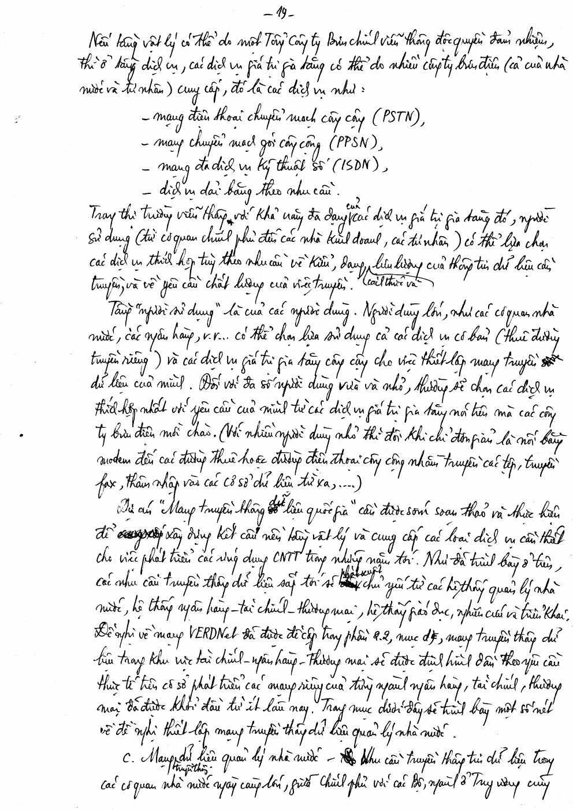
Các dịch vụ đó có phạm vi phục vụ khác nhau (PSTN cho các đối tượng có nhu cầu thấp nhất, ...), đảm bảo cho các dịch vụ ở mọi cấp về nhu cầu. Cụ thể, có thể liệt kê các dịch vụ như:
- mạng điện thoại chuyển mạch công cộng (PSTN),
- mạng chuyển mạch gói công cộng (PPSN),
- mạng đa dịch vụ kỹ thuật số (ISDN),
- dịch vụ dải băng theo nhu cầu.
Trong thời gian tới, thứ tự và thời gian triển khai các dịch vụ nói trên sẽ tuỳ thuộc vào nhu cầu và khả năng thực tế; dự kiến từ nay đến năm 2000 sẽ lần lượt các dịch vụ đó được triển khai đến các đơn vị, các địa phương, các cơ sở trên toàn quốc theo nhiều tốc độ khác nhau.
Trong "giai đoạn đầu", những cố gắng chủ yếu có thể được tập trung để cung cấp các dịch vụ thuê bao kênh X.25 chuyển mạch gói đến tất cả các tỉnh lỵ và một số huyện, và đến cuối 1996 đến hơn 400 huyện trong cả nước. Như vậy, dự án mạng truyền thông dữ liệu quốc gia sẽ được tích cực thực hiện để cung cấp các dịch vụ cần thiết cho việc phát triển các dự án ứng dụng CNTT trong những năm tới.
(Về những cố gắng phối hợp giữa việc xây dựng các dịch vụ truyền thông dữ liệu và, trên cơ sở các dịch vụ đó, xây dựng các mạng ứng dụng, xem thêm ở mục c dưới đây).
c. Mạng ứng dụng thống nhất cho hệ thống quản lý nhà nước.
Cần nghiên cứu và triển khai xây dựng một Mạng ứng dụng thống nhất cho hệ thống quản lý nhà nước. Nhu cầu truyền thông tin dữ liệu trong các cơ quan nhà nước ngày càng lớn, giữa Chính phủ với các Bộ, ngành ở Trung ương cùng với các tỉnh, thành địa phương. Do nhu cầu đó, và cũng còn do các yêu cầu riêng về an toàn thông tin, về độ tin cậy, ..., nên cần xây dựng một mạng ứng dụng thống nhất về truyền thông dữ liệu cho hệ thống quản lý nhà nước.
Mạng này được thiết kế để chuyển tất cả các loại thông tin (kể cả tiếng nói, fax, dữ liệu, ảnh và văn bản); trong giai đoạn đầu tập trung vào truyền dữ liệu và thư tín điện tử. Các dịch vụ truyền dữ liệu và thư tín điện tử cũng tạo cơ sở cho việc thực hiện nhiều dịch vụ có giá trị như:
These services have differing scopes of service (PSTN for the objects with the lowest needs, ...), ensuring services at every level of need. Specifically, one can list the services as:
- public switched telephone network (PSTN),
- public packet-switched network (PPSN),
- integrated services digital network (ISDN),
- bandwidth-on-demand service.
In the period ahead, the order and timing of deploying the above services will depend on real needs and capabilities; it is anticipated that from now to the year 2000 these services will successively be deployed to the units, localities and establishments nationwide at various speeds.
In the "initial phase", the main efforts may be concentrated on providing X.25 packet-switched leased-channel subscription services to all provincial capitals and a number of districts, and by the end of 1996 to more than 400 districts nationwide. Thus, the national data-communication network project will be actively implemented to provide the necessary services for developing the IT application projects in the coming years.
(On the coordinated efforts between building the data-communication services and, on the basis of those services, building the application networks, see further in section c below).
c. Unified application network for the State management system.
It is necessary to research and deploy the building of a unified application network for the State management system. The need to transmit data information within State agencies grows ever larger, between the Government and the Ministries and sectors at the central level together with the provinces, cities and localities. Because of that need, and also because of the specific requirements regarding information security, reliability, ..., it is necessary to build a unified data-communication application network for the State management system.
This network is designed to transmit all types of information (including voice, fax, data, images and text); in the initial phase concentrating on data transmission and electronic mail. The data-transmission and electronic-mail services also create the basis for implementing many valuable services such as:
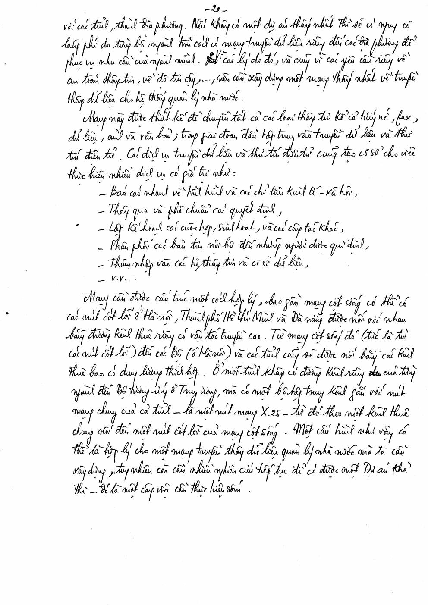
- Báo cáo nhanh về tình hình và các chỉ tiêu kinh tế - xã hội,
- Thông qua và phê chuẩn các quyết định,
- Lập kế hoạch các cuộc họp, sinh hoạt, và các công tác khác,
- Phân phối các bản tin nội bộ đến những người được quy định,
- Thâm nhập vào các hệ thống tin và cơ sở dữ liệu,
- v.v...
Mạng cần được cấu trúc một cách hợp lý, bao gồm mạng cột sống (mạng trục) có thể có các nút lõi ở Hà Nội, Thành phố Hồ Chí Minh và Đà Nẵng được nối với nhau bằng các mạng trục; rồi các nút lõi đó và các tỉnh cũng sẽ được nối bằng các kênh thuê bao có dung lượng thích hợp. Ở mỗi tỉnh, thay vì có đường kênh riêng của tỉnh chạy đến bộ trung tâm ở Trung ương, có một bộ tập trung kênh gắn với nút mạng chung của cả tỉnh - là một nút mạng X.25 - từ đó theo một kênh thuê chung nối đến một nút lõi của mạng cột sống. Một cấu trúc như vậy có thể là hợp lý cho một mạng truyền thông dữ liệu quản lý nhà nước mà ta cần xây dựng; tuy nhiên còn cần nhiều nghiên cứu tiếp tục để có được một Dự án khả thi - đó là một công việc cần thực hiện sớm.
- Rapid reporting on the situation and the socio-economic indicators,
- Adopting and ratifying decisions,
- Planning meetings, activities, and other tasks,
- Distributing internal bulletins to designated persons,
- Accessing information systems and databases,
- etc.
The network needs to be structured in a rational way, comprising a backbone (trunk) network that may have core nodes in Hanoi, Ho Chi Minh City and Da Nang connected to one another by trunk networks; then those core nodes and the provinces will also be connected by leased channels of appropriate capacity. In each province, instead of a channel line of the province running to the central hub at the center, there is a channel concentrator attached to the province's common network node - which is an X.25 network node - from which, over a common leased channel, it connects to a core node of the backbone network. Such a structure may be rational for a State-management data-communication network that we need to build; however much further research is still needed to arrive at a feasible project - this is a task to be carried out soon.
2.5. Các chuẩn và hệ thống mở.
a. Quan điểm về hệ thống mở.
Nghị quyết 49/CP về phát triển CNTT đã coi "hệ thống mở" là một trong các quan điểm chủ đạo của việc phát triển CNTT ở nước ta, nhằm tăng hiệu quả và giảm lãng phí, đảm bảo tính nhất quán giữa các phần của toàn bộ quá trình phát triển CNTT: từ việc phát triển kết cấu hạ tầng của CNTT, đào tạo huấn luyện về CNTT, xây dựng nền công nghiệp CNTT và phát triển các hệ thống tin học hoá trong ứng dụng CNTT.
Phát triển CNTT theo quan điểm hệ thống mở đòi hỏi phải xác định và tuân theo một hệ các chuẩn và nhóm chuẩn - các chuẩn này được lựa chọn phù hợp với các xu hướng phát triển phổ biến của CNTT hiện đại. Ví dụ, nội dung của nó là các quy định về giao diện giữa các phần, các lớp của một hệ tin học, để mọi sản phẩm tin học, dù được sản xuất từ các nguồn khác nhau, từ các hãng chế tạo khác nhau, nhưng nếu cùng tuân thủ các chuẩn đó thì đều có thể lắp ghép, kết nối được với nhau. Ngoài ra còn các loại chuẩn khác, mà việc xác định các loại chuẩn đó là một trong những vấn đề cần được chú ý.
Trong thời gian tới, một trong những biện pháp quan trọng để bảo đảm cho các chuẩn và các hệ thống mở được xây dựng và được thực hiện, đó là các chính sách và các quy định pháp lý về CNTT.
Như vậy, phát triển CNTT theo quan điểm hệ thống mở đã kể ở trên phải đi đôi với việc từng bước xây dựng và ban hành một hệ các chuẩn, và các chính sách để tôn trọng thực hiện các chuẩn đó. Vấn đề này có tầm quan trọng đặc biệt trong việc phát triển CNTT ở nước ta, vì thực tế phát triển CNTT ở nước ta trong những năm qua, tuy chưa dài, nhưng đã thể hiện khá rõ rằng việc phát triển CNTT, nếu không có sự phối hợp trong toàn hệ thống, thì sẽ khó tránh khỏi những lãng phí lớn cả về tiền của cũng như về thời gian, và về khả năng lắp ghép, kết nối để tạo thành các hệ thống có hiệu quả. Nếu không thực hiện tốt chính sách hệ thống mở và các chuẩn thì trong tương lai không xa, cả nước sẽ có thể trở thành một tập hợp lớn những "đảo tin học" chẳng thể thông tin và trao đổi được với nhau, ...
2.5. Standards and open systems.
a. The viewpoint on open systems.
Resolution 49/CP on the development of IT regarded "open systems" as one of the guiding viewpoints of IT development in our country, aiming to increase effectiveness and reduce waste, ensuring consistency among the parts of the whole IT-development process: from developing the IT infrastructure, IT education and training, building the IT industry, and developing the informatized systems in IT applications.
Developing IT according to the open-systems viewpoint requires defining and adhering to a system of standards and groups of standards - these standards being chosen to accord with the prevailing development trends of modern IT. For example, their content is the specifications of the interfaces between the parts and layers of an information-technology system, so that every IT product, though produced from different sources, from different manufacturers, will - if all conform to those standards - be able to be assembled and interconnected with one another. Besides, there are other kinds of standards, and defining those kinds of standards is one of the matters requiring attention.
In the time ahead, one of the important measures to ensure that the standards and open systems are built and implemented is the policies and legal regulations on IT.
Thus, developing IT according to the open-systems viewpoint mentioned above must go hand in hand with step-by-step building and promulgating a system of standards, and policies for respecting and implementing those standards. This matter is of particular importance in the development of IT in our country, because the actual development of IT in our country over the past years, though not yet long, has shown fairly clearly that developing IT, without coordination across the whole system, will hardly avoid great waste both of money and of time, and of the ability to assemble and interconnect so as to form effective systems. If the open-systems policy and the standards are not well implemented, then in the not-distant future the whole country may become one large collection of "information-technology islands" unable to communicate and exchange with one another, ...
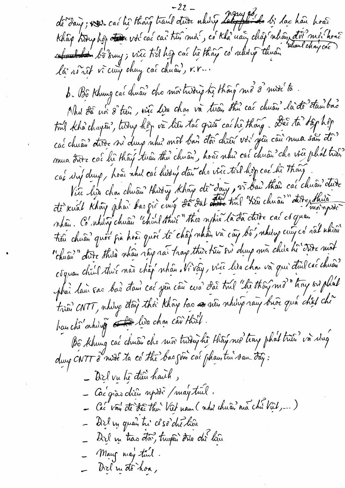
... dễ dàng; các hệ thống tránh được những nguy cơ bị lạc hậu hoặc khập khiễng với các cải tiến mới, có khả năng chấp nhận đổi mới hoặc nhanh chóng các bổ sung; việc tích hợp các hệ thống có những thuận lợi rõ rệt vì cùng chung các chuẩn, v.v...
b. Bộ khung các chuẩn cho môi trường hệ thống mở ở nước ta.
Như đã nói ở trên, việc lựa chọn và tuân thủ các chuẩn là để đảm bảo tính khả chuyển, tương hợp và liên tác giữa các hệ thống. Đối với ta, tập hợp các chuẩn được sử dụng như một bản đối chiếu với yêu cầu mua sắm để mua được các hệ thống tuân thủ chuẩn, hoặc như các chuẩn cho việc phát triển các ứng dụng, hoặc như các hướng dẫn cho việc tích hợp các hệ thống.
Việc lựa chọn chuẩn không dễ dàng, vì bản thân các chuẩn được đề xuất không phải bao giờ cũng đã đạt đến tính "tiêu chuẩn" được thừa nhận một cách phổ biến. Có những chuẩn "chính thức" theo nghĩa là đã được các cơ quan tiêu chuẩn quốc gia hoặc quốc tế chấp nhận và công bố, nhưng cũng có rất nhiều "chuẩn" được thừa nhận và sử dụng rộng rãi trong thực tiễn mà chưa hề được một cơ quan chính thức nào chấp nhận. Vì vậy, việc lựa chọn và quy định các chuẩn phải làm sao bảo đảm các yêu cầu của tính "hệ thống mở" trong sự phát triển CNTT, nhưng đồng thời không tạo nên những ràng buộc quá chặt chẽ hạn chế những lựa chọn cần thiết.
Bộ khung các chuẩn cho môi trường hệ thống mở trong phát triển và ứng dụng CNTT ở nước ta có thể bao gồm các phạm trù sau đây:
- Dịch vụ hệ điều hành,
- Các giao diện người / máy tính,
- Các vấn đề đặc thù Việt Nam (như chuẩn mã chữ Việt, ...),
- Dịch vụ quản trị cơ sở dữ liệu,
- Dịch vụ trao đổi, truyền đưa dữ liệu,
- Mạng máy tính,
- Dịch vụ đồ hoạ,
... easily; the systems avoid the risks of becoming obsolete or mismatched with the new improvements, being able to accept renewal or rapid additions; the integration of systems has clear advantages because of sharing common standards, etc.
b. The framework of standards for the open-systems environment in our country.
As stated above, choosing and adhering to standards is to ensure portability, compatibility and interoperability among systems. For us, the set of standards used serves as a reference against which procurement requirements are matched so as to purchase standards-conformant systems, or as standards for developing applications, or as guidelines for integrating systems.
Choosing standards is not easy, because the proposed standards themselves have not always attained a "standard" quality that is universally recognized. There are "official" standards in the sense of having been accepted and published by national or international standards bodies, but there are also very many "standards" recognized and widely used in practice that have never been accepted by any official body. Therefore, the selection and prescription of standards must be such as to ensure the requirements of "open systems" in the development of IT, but at the same time not to create bindings that are too tight, restricting the necessary choices.
The framework of standards for the open-systems environment in the development and application of IT in our country may include the following categories:
- Operating-system services,
- Human / computer interfaces,
- Vietnam-specific issues (such as the Vietnamese character-code standard, ...),
- Database management services,
- Data exchange and transmission services,
- Computer networks,
- Graphics services,
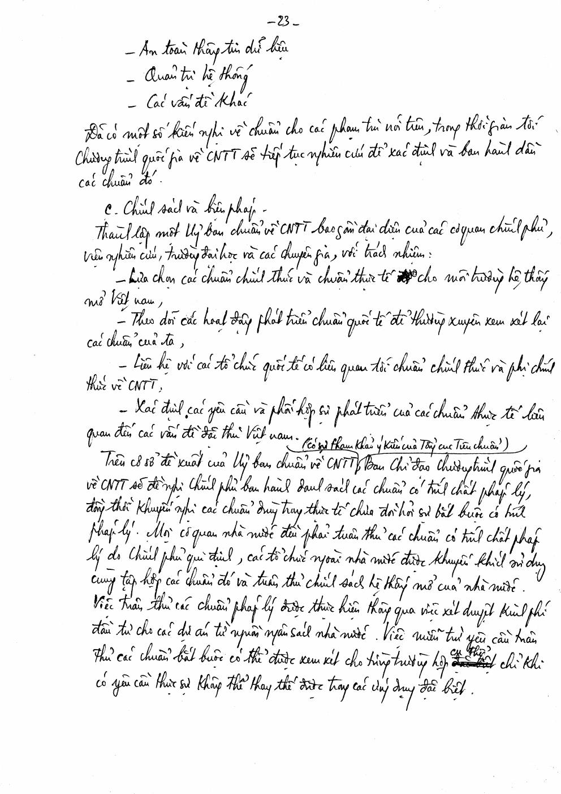
- An toàn thông tin dữ liệu,
- Quản trị hệ thống,
- Các vấn đề khác.
Để có một số kiến nghị về chuẩn cho các phạm trù nói trên, trong thời gian tới Chương trình quốc gia về CNTT sẽ tiếp tục nghiên cứu để xác định và ban hành dần các chuẩn đó.
c. Chính sách và biện pháp.
Thành lập một Uỷ ban chuẩn về CNTT bao gồm đại diện của các cơ quan chính phủ, viện nghiên cứu, trường đại học và các chuyên gia, với trách nhiệm:
- Lựa chọn các chuẩn chính thức và chuẩn thực tế cho môi trường hệ thống mở ở Việt Nam,
- Theo dõi các hoạt động phát triển chuẩn quốc tế để thường xuyên xem xét lại các chuẩn của ta,
- Liên hệ với các tổ chức quốc tế có liên quan tới chuẩn chính thức và phi chính thức về CNTT,
- Xác định các yêu cầu và phối hợp sự phát triển của các chuẩn thực tế liên quan tới các vấn đề đặc thù Việt Nam (có sự tham khảo ý kiến của Uỷ ban Tiêu chuẩn).
Trên cơ sở đề xuất của Uỷ ban chuẩn về CNTT, Ban Chỉ đạo chương trình quốc gia về CNTT sẽ đề nghị Chính phủ ban hành dần dần các chuẩn có tính chất pháp lý, đồng thời khuyến nghị các chuẩn quy hay thực tế chưa đòi hỏi sự bắt buộc có tính pháp lý. Mọi cơ quan nhà nước đều phải tuân thủ các chuẩn có tính chất pháp lý do Chính phủ quy định; các tổ chức ngoài nhà nước được khuyến khích sử dụng tập hợp các chuẩn đó và tuân thủ chính sách hệ thống mở của nhà nước.
Việc tuân thủ các chuẩn pháp lý được thực hiện thông qua việc xét duyệt kinh phí đầu tư cho các dự án từ nguồn ngân sách nhà nước. Việc miễn trừ yêu cầu tuân thủ các chuẩn bắt buộc có thể được xem xét cho từng trường hợp cụ thể chỉ khi có yêu cầu thực sự không thể thay thế được trong các ứng dụng đặc biệt.
- Data-information security,
- System administration,
- Other issues.
In order to have some recommendations on standards for the above categories, in the time ahead the National Program on IT will continue to research so as to define and gradually promulgate those standards.
c. Policies and measures.
Establishing a Standards Committee on IT comprising representatives of government agencies, research institutes, universities and experts, with the responsibilities:
- To select the official standards and de-facto standards for the open-systems environment in Vietnam,
- To follow international standards-development activities so as to regularly review our standards,
- To liaise with international organizations relevant to official and unofficial IT standards,
- To define the requirements for, and coordinate the development of, the de-facto standards relating to Vietnam-specific issues (in consultation with the Standards Committee).
On the basis of proposals by the Standards Committee on IT, the Steering Board of the National Program on IT will propose that the Government gradually promulgate standards of a legal character, and at the same time recommend the prescribed or de-facto standards that do not yet require legal compulsion. All State agencies must comply with the standards of a legal character prescribed by the Government; non-State organizations are encouraged to use that set of standards and to comply with the State's open-systems policy.
Compliance with the legal standards is enforced through the appraisal of investment funding for projects from the State budget source. Exemption from the requirement to comply with mandatory standards may be considered case by case only when there is a genuine, irreplaceable need in special applications.
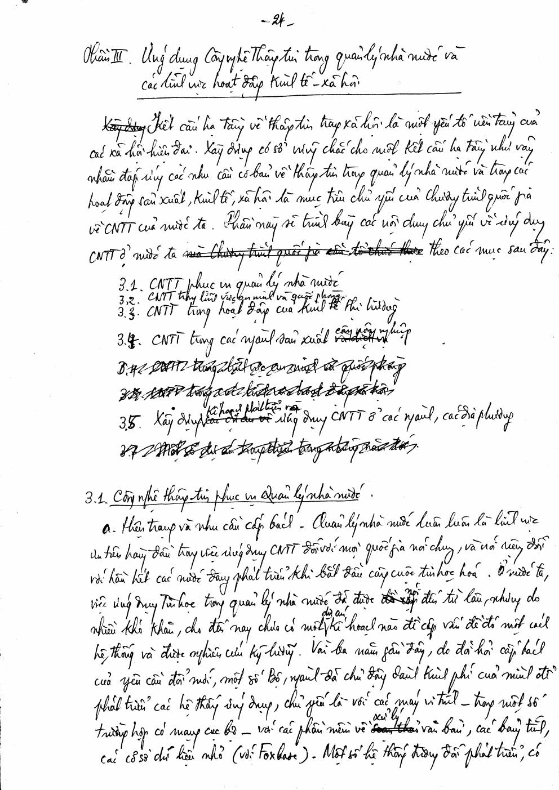
Phần III. Ứng dụng Công nghệ Thông tin trong quản lý nhà nước và các lĩnh vực hoạt động kinh tế - xã hội.
Kết cấu hạ tầng về thông tin trong xã hội là một yếu tố nền tảng của các xã hội hiện đại. Xây dựng cơ sở vững chắc cho một kết cấu hạ tầng như vậy nhằm đáp ứng các nhu cầu cơ bản về thông tin trong quản lý nhà nước và trong hoạt động sản xuất, kinh tế, xã hội là mục tiêu chủ yếu của Chương trình quốc gia về CNTT của nước ta. Phần này sẽ trình bày các nội dung chủ yếu về ứng dụng CNTT ở nước ta theo các mục sau đây:
3.1. CNTT phục vụ quản lý nhà nước
3.2. CNTT trong lĩnh vực an ninh và quốc phòng
3.3. CNTT trong hoạt động của kinh tế thị trường
3.4. CNTT trong các ngành sản xuất công nông nghiệp
3.5. Xây dựng và ứng dụng CNTT ở các ngành, các địa phương
3.1. Công nghệ thông tin phục vụ quản lý nhà nước.
a. Hiện trạng và nhu cầu cấp bách.
Quản lý nhà nước luôn luôn là lĩnh vực đi hàng đầu trong việc ứng dụng CNTT đối với mọi quốc gia nói chung, và nói riêng đối với hầu hết các nước đang phát triển khi bắt đầu công cuộc tin học hoá. Ở nước ta, việc ứng dụng tin học trong quản lý nhà nước đã được thực hiện từ lâu, nhưng do nhiều khó khăn, cho đến nay chưa có một kế hoạch nào để đề cập một cách hệ thống và được nghiên cứu kỹ lưỡng. Vài ba năm gần đây, do đòi hỏi cấp bách của yêu cầu đổi mới, một số bộ, ngành đã chủ động dành kinh phí của mình để phát triển các hệ thống ứng dụng, chủ yếu là với các máy vi tính - trong một số trường hợp có mạng cục bộ - với các phần mềm xử lý văn bản, các bảng tính, các cơ sở dữ liệu nhỏ (với Foxbase). Một số hệ thống được phát triển ...
Part III. Application of Information Technology in State management and the fields of socio-economic activity.
The information infrastructure in society is a foundational factor of modern societies. Building a solid foundation for such an infrastructure so as to meet the basic information needs in State management and in production, economic and social activity is the principal objective of our country's National Program on IT. This part will present the principal contents on the application of IT in our country according to the following headings:
3.1. IT serving State management
3.2. IT in the field of security and national defense
3.3. IT in the operation of the market economy
3.4. IT in the industrial and agricultural production sectors
3.5. Building and applying IT in the sectors and localities
3.1. Information technology serving State management.
a. Current situation and urgent needs.
State management is always the leading field in the application of IT for every country in general, and in particular for most developing countries when they begin the work of informatization. In our country, the application of informatics in State management has been carried out for a long time, but owing to many difficulties, up to now there has been no plan to address it in a systematic and carefully studied way. In the last few years, owing to the urgent demand of the renovation requirement, a number of ministries and sectors have taken the initiative to set aside their own funds to develop application systems, mainly with microcomputers - in some cases with a local area network - with word-processing software, spreadsheets, small databases (with Foxbase). A number of systems have been developed ...
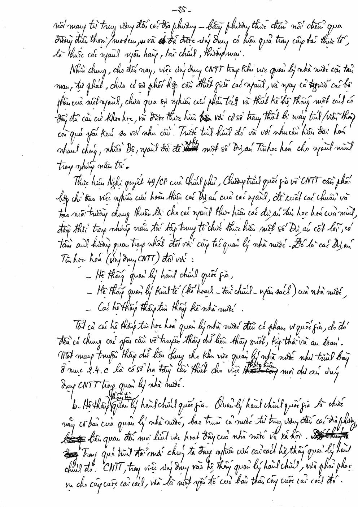
... còn quá yếu kém so với nhu cầu. Trước tình hình đó và với nhu cầu hiện đại hoá nhanh chóng, nhiều Bộ, ngành đã đề xuất một số Dự án Tin học hoá cho ngành mình trong những năm tới.
Thực hiện Nghị quyết 49/CP của Chính phủ, Chương trình quốc gia về CNTT cần phối hợp chỉ đạo việc nghiên cứu hoàn thiện các Dự án của các ngành, đề xuất các chuẩn và tạo môi trường chung thuận lợi cho các ngành thực hiện các dự án tin học hoá của mình; đồng thời trong những năm tới tập trung tổ chức thực hiện một số Dự án cốt lõi, có tầm ảnh hưởng quan trọng nhất đối với công tác quản lý nhà nước. Đó là các Dự án Tin học hoá (ứng dụng CNTT) đối với:
- Hệ thống quản lý hành chính quốc gia,
- Hệ thống quản lý kinh tế (kế hoạch - tài chính - ngân sách) của nhà nước,
- Các hệ thống thông tin thống kê nhà nước.
Tất cả các hệ thống tin học hoá quản lý nhà nước đều có phạm vi quốc gia, do đó đều có chung các yêu cầu về truyền thông dữ liệu thông suốt, kịp thời và an toàn. Một mạng truyền thông dữ liệu chung cho khu vực quản lý nhà nước như trình bày ở mục 2.4.c là cơ sở hạ tầng cần thiết cho việc thực hiện mọi dự án ứng dụng CNTT trong quản lý nhà nước.
b. Hệ thống quản lý hành chính quốc gia.
Quản lý hành chính quốc gia tổ chức và tiến hành các hoạt động cơ bản của quản lý nhà nước, bao trùm cả nước từ trung ương đến các địa phương, liên quan đến mọi lĩnh vực hoạt động của nhà nước và xã hội. Trong quá trình tổ chức thực hiện quản lý hành chính, CNTT vừa phải phục vụ cho công việc ở các cấp, vừa là một yếu tố của bản thân công việc đó ...
... still too weak relative to demand. In view of this situation and the need for rapid modernization, many Ministries and sectors have proposed a number of Informatization Projects for their own sectors in the coming years.
In implementing Government Resolution 49/CP, the National Program on IT must coordinate the direction of research to finalize the projects of the various sectors, propose standards, and create a favorable common environment for the sectors to carry out their own informatization projects; at the same time, in the coming years, it will concentrate on organizing the implementation of a number of core Projects having the most important influence on State management work. These are the Informatization Projects (IT applications) for:
- The national administrative management system,
- The State's economic management system (planning - finance - budget),
- The State statistical information systems.
All informatized State-management systems are national in scope, and therefore all share common requirements for smooth, timely and secure data communications. A common data communications network for the State-management sector, as presented in section 2.4.c, is the necessary infrastructure for carrying out every IT-application project in State management.
b. The national administrative management system.
National administrative management organizes and conducts the basic activities of State management, covering the whole country from the central level to the localities, related to every field of activity of the State and society. In the process of organizing and carrying out administrative management, IT must both serve the work at each level and be itself a factor of that work ...
... với một hệ thống rất lớn và phức tạp; tin học hoá hệ thống đó là không thể thực hiện đầy đủ trong một số giai đoạn ngắn. Trong mấy năm vừa qua, ta đã có một số cố gắng bước đầu trong ứng dụng Tin học nhằm phục vụ một số công tác quản lý ở Văn phòng Chính phủ, ở Văn phòng Chủ tịch nước, ..., nhưng còn ở trình độ chưa cao, chủ yếu phục vụ việc cung cấp các thông tin thiết thực cho việc ra quyết định của các cấp quản lý hành chính nhà nước.
Việc ứng dụng CNTT vào hệ thống quản lý hành chính quốc gia cần theo các phương châm: tuy phải triển khai dần từng bước nhưng phải tiến hành trên cơ sở một thiết kế tin học của toàn thể; phải xuất phát từ một quan điểm hệ thống để xác định nội dung của từng bộ phận trong quá trình thực hiện; mục tiêu chủ yếu của việc tin học hoá là cung cấp kịp thời các thông tin cần thiết cho việc ra quyết định tại các cấp quản lý và điều hành.
Ứng dụng CNTT để xây dựng hệ thống tin quản lý hành chính quốc gia là một công việc to lớn, được thực hiện dần trong nhiều năm 90. Trong thời gian hai năm tới (94-95) cần thực hiện các nội dung sau đây:
- Tiến hành một cách thấu đáo việc nghiên cứu phân tích và thiết kế tổng thể hệ thống tin quản lý hành chính quốc gia, đặc biệt để xác định kiến trúc của hệ thống và các mối liên kết trong hệ thống. Thiết kế tổng thể để làm căn cứ hướng dẫn cho việc thực hiện dần từng dự án tin học hoá cụ thể.
- Thiết lập sớm một mạng thông tin dữ liệu cho các cơ quan chủ yếu để phục vụ việc lãnh đạo và điều hành của Chính phủ và các cơ quan trung ương; từ các đầu não này có khả năng trao đổi thông tin, thu thập thông tin (được bảo mật theo yêu cầu) và cung cấp lên các cơ sở dữ liệu; và trong giai đoạn đầu các cơ sở thông tin này sẽ cung cấp các thông tin ban đầu, thông tin tổng hợp và thông tin ...
... with a very large and complex system; informatizing that system cannot be fully accomplished in only a few short phases. In the past few years, we have made a number of initial efforts in applying informatics to serve certain management tasks at the Government Office, at the Office of the President, ..., but still at a not-high level, mainly serving the provision of information practical to the decision-making of the levels of State administrative management.
The application of IT to the national administrative management system must follow these guiding principles: although it must be deployed gradually step by step, it must be carried out on the basis of an informatics design of the whole; it must proceed from a systems viewpoint to determine the content of each part during implementation; the chief aim of informatization is to provide in timely fashion the information needed for decision-making at the various levels of management and administration.
Applying IT to build the national administrative management information system is a great undertaking, carried out gradually over many years of the 1990s. In the coming two years (94-95) the following contents need to be carried out:
- Thoroughly conduct the overall research, analysis and design of the national administrative management information system, in particular to determine the architecture of the system and the interconnections within it. The overall design serves as the basis to guide the gradual implementation of each specific informatization project.
- Establish early a data-information network for the principal agencies to serve the leadership and administration of the Government and the central agencies; from these nerve centers information can be exchanged and gathered (kept confidential as required) and supplied up to the databases; and in the first phase these information bases will provide initial information, aggregate information and ...
... giai đoạn đầu sẽ được hoàn thiện để tự thành một mạng các cơ sở thông tin cung cấp mọi thông tin cần thiết cho việc ra quyết định. Trong giai đoạn đầu, nội dung của mạng này sẽ được thực hiện tập trung ở Văn phòng Chính phủ, có ghép nối với các cơ sở dữ liệu của các Bộ, ngành và các địa phương trong phạm vi một số các Bộ.
- Trên cơ sở thiết kế tổng thể, các Bộ, ngành và các địa phương xây dựng các dự án ứng dụng CNTT của mình, vừa chú ý đến yêu cầu của các quan hệ hành chính quốc gia nói chung, vừa đáp ứng các yêu cầu quản lý của ngành hoặc địa phương mình.
c. Hệ thống quản lý kinh tế (kế hoạch - tài chính - ngân sách) của nhà nước.
Chức năng quản lý vĩ mô nền kinh tế của Nhà nước được thực hiện thông qua việc hoạch định kế hoạch dài hạn và các kế hoạch phát triển hàng năm cùng với các kế hoạch về thu chi ngân sách, điều hành và giám sát chi ngân sách nhà nước. Các nhiệm vụ này được thực hiện ở một số Bộ, ngành và các địa phương trong hệ thống phân cấp của nhà nước, nhưng được tập trung chủ yếu ở các cơ quan: Uỷ ban Kế hoạch nhà nước, Bộ Tài chính và Ngân hàng nhà nước (Ngân hàng trung ương). Vì vậy, ứng dụng CNTT để phục vụ cho việc quản lý kinh tế của Chính phủ tuy cần được quan tâm ở mọi Bộ, ngành, địa phương nhưng cũng cần được tập trung đầu tư cho các Dự án về ứng dụng CNTT của ba cơ quan nói trên và cho các dự án khác phối hợp với các Dự án đó.
Trong mấy năm gần đây, với phương tiện và nguồn lực hiện có, Ngân hàng nhà nước và Bộ Tài chính đã đề xuất và thực hiện có kết quả bước đầu các dự án tin học hoá. Ngân hàng nhà nước và Trung tâm Tin học được nối mạng bằng đường điện thoại/modem đến toàn bộ các chi nhánh cấp tỉnh, thành phố và một số chi nhánh quận huyện, phục vụ việc thực hiện các chức năng thanh toán, hạch toán kế toán, và cung cấp các thông tin báo cáo kịp thời, đầy đủ, chính xác ... phục vụ công tác theo dõi, giám sát và điều hành việc thu, chi ngân sách nhà nước. Bộ Tài chính đã đề xuất và thực hiện trong 3 năm qua đề án tin học hoá quản lý ngân sách, gồm các hệ về: thuế, kho bạc nhà nước, và ngân sách nhà nước. Các hệ thống tin học hoá này được triển khai ở Trung ương và cũng được nối qua đường điện thoại/modem tới hầu hết các tỉnh, thành phố, ... với các phần mềm ứng dụng do các tập thể cán bộ trong nước thực hiện.
Trên cơ sở những cố gắng bước đầu và các kinh nghiệm thu thập được, Ngân hàng nhà nước, Bộ Tài chính và Uỷ ban Kế hoạch đang tiếp tục nghiên cứu để hoàn chỉnh các ...
... the first phase will be perfected so as to form of itself a network of information bases that supplies all information needed for decision-making. In the first phase, the content of this network will be implemented centrally at the Government Office, with connections to the databases of the Ministries, sectors and localities within the scope of a number of Ministries.
- On the basis of the overall design, the Ministries, sectors and localities will build their own IT-application projects, attending both to the requirements of the national administrative relations in general and to meeting the management requirements of their own sector or locality.
c. The State's economic management system (planning - finance - budget).
The State's macroeconomic management function is exercised through the drawing-up of long-term plans and annual development plans, together with plans for budget revenue and expenditure, and the administration and supervision of State budget expenditure. These tasks are carried out at a number of Ministries, sectors and localities within the State's hierarchical system, but are concentrated mainly in the agencies: the State Planning Committee, the Ministry of Finance and the State Bank (the Central Bank). Therefore, applying IT to serve the Government's economic management, while it must be attended to at every Ministry, sector and locality, also needs concentrated investment for the IT-application Projects of the three above-mentioned agencies and for other projects coordinated with those Projects.
In recent years, with the means and resources available, the State Bank and the Ministry of Finance have proposed and implemented, with initial results, informatization projects. The State Bank and its Informatics Center are networked by telephone/modem lines to all provincial/municipal branches and a number of district branches, serving the performance of payment and accounting functions and supplying timely, complete and accurate report information ... serving the work of monitoring, supervising and administering State budget revenue and expenditure. The Ministry of Finance has proposed and implemented over the past 3 years the project to informatize budget management, covering the systems for: taxation, the State Treasury, and the State budget. These informatized systems have been deployed at the central level and are also connected by telephone/modem lines to most provinces and cities, ... with the application software carried out by domestic teams of cadres.
On the basis of these initial efforts and the experience gathered, the State Bank, the Ministry of Finance and the Planning Committee are continuing research to finalize the ...
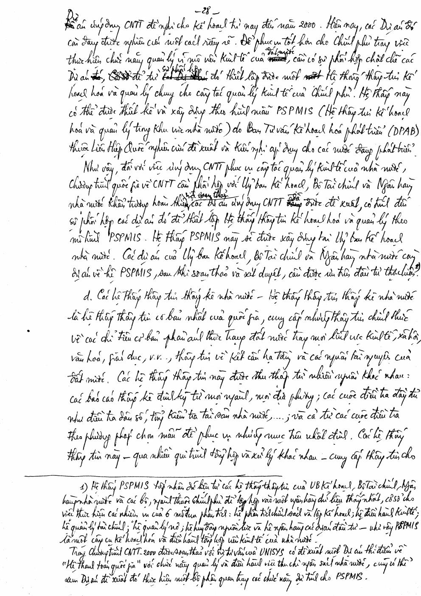
[Trang này phần lớn được viết lại, gạch xoá nhiều; nội dung về tin học hoá thống kê:]
... hoặc thiết bị và máy tính còn quá thấp và thiếu so với nhu cầu thiết thực. Ta chú ý rằng việc tin học hoá thống kê - dữ liệu qua khảo sát và báo cáo định kỳ, hay qua các cuộc điều tra chuyên đề - đều đòi hỏi chi phí rất lớn. Cần đầu tư đầy đủ để làm tốt việc thu thập thông tin này, nhưng đồng thời cần nhanh chóng tin học hoá việc tổ chức và khai thác các hệ thống tin đó ..., để tăng hiệu quả sử dụng; nếu không thì những chi phí tổ chức cho việc thu thập thông tin sẽ trở thành lãng phí.
Trong thời gian tới, cần hoàn chỉnh việc soạn thảo, xét duyệt, và sau đó thực thi để triển khai Dự án "Đẩy mạnh ứng dụng CNTT trong thống kê của nhà nước" để Tổng cục Thống kê thực hiện; đồng thời cùng với việc triển khai các dự án tin học hoá các hệ thống thông tin thống kê chuyên đề về tài nguyên thiên nhiên (khoáng sản, tài nguyên nước, rừng và tài nguyên đất, ...), về ruộng đất, v.v... Tuỳ theo yêu cầu tổ chức và phân công của toàn hệ thống, các hệ thống tin thống kê chuyên đề này sẽ do Tổng cục Thống kê và các ngành hữu quan phối hợp thực hiện.
Nói chung, các hệ thống tin thống kê nói trên sẽ ứng dụng các công cụ phức tạp và phong phú (về tổ chức và quản lý các hệ cơ sở dữ liệu lớn, thực hiện các mạng thu thập số liệu, văn bản, ảnh, bản đồ, truyền các cơ sở dữ liệu, v.v...), với nhiều yêu cầu về truyền đưa dữ liệu nhanh, có thể được nối liền với các hệ thống có tính chất nghiệp vụ khác.
¹⁾ Hệ thống PSPMIS tiếp nhận và bổ túc cho các hệ thống thông tin của UB Kế hoạch, Bộ Tài chính, Ngân hàng nhà nước và các bộ, ngành khác, hoạt động theo phương thức phân tán và với nguồn thông tin đầu vào từ chính các phân hệ tại các bộ, ngành đó. Vì thế, hệ thống PSPMIS cần được xây dựng để nối các cơ sở dữ liệu về kế hoạch, hệ thống về tài chính (thu, chi và các nguồn tài chính, ...), hệ quản lý nợ (nợ nước ngoài và trong nước), hệ ngân hàng các dự án đầu tư ... Như vậy hệ thống PSPMIS là một tập hợp các hệ cơ sở dữ liệu và các bộ chương trình phần mềm ứng dụng trong các phân hệ đó.
[This page is largely rewritten with many crossings-out; content on informatizing statistics:]
... or the equipment and computers are still too low-grade and insufficient relative to the practical demand. We note that informatizing statistics - data through surveys and periodic reports, or through thematic investigations - all require very large expenditures. Adequate investment must be made to do well the gathering of this information, but at the same time it is necessary to rapidly informatize the organization and exploitation of those information systems ..., in order to increase the efficiency of use; otherwise the costs of organizing the information-gathering will become wasteful.
In the coming period, it is necessary to finalize the drafting, appraisal, and then execution to deploy the Project "Intensifying the application of IT in the State's statistics" for the General Statistics Office to carry out; and at the same time, together with the deployment of projects to informatize the thematic statistical information systems on natural resources (minerals, water resources, forests and land resources, ...), on farmland, etc. Depending on the organizational and division-of-labor requirements of the whole system, these thematic statistical information systems will be carried out jointly by the General Statistics Office and the relevant sectors.
In general, the statistical information systems mentioned above will apply complex and rich tools (for organizing and managing large database systems, implementing collection networks for figures, text, images and maps, transmitting databases, etc.), with many requirements for fast data transmission, and may be interconnected with other systems of a professional nature.
¹⁾ The PSPMIS system receives from and supplements the information systems of the Planning Committee, the Ministry of Finance, the State Bank and other Ministries and sectors, operating in a distributed manner and with input information from the sub-systems at those Ministries and sectors themselves. Therefore, the PSPMIS system needs to be built to connect the planning databases, the financial system (revenue, expenditure and financial sources, ...), the debt-management system (foreign and domestic debt), the bank of investment projects... Thus the PSPMIS system is a collection of database systems and the sets of application-software programs in those sub-systems.
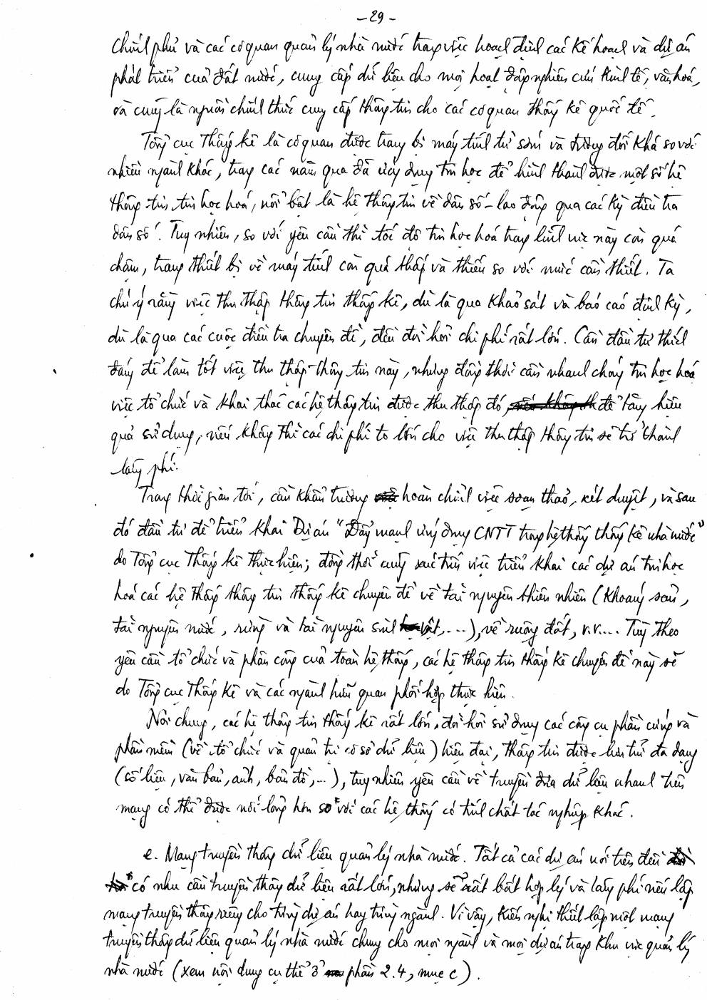
[Phần trên trang này lặp lại gần như nguyên văn đoạn thống kê ở trang 28 - tác giả chép lại trước khi bổ sung mục về mạng truyền thông dữ liệu.]
e. Mạng truyền thông dữ liệu quản lý nhà nước.
Tất cả các dự án nói trên đều có các nhu cầu truyền thông dữ liệu ở các cấp, nhưng về cơ cấu tổ chức và khai thác có lẽ hợp lý là dựa phần lớn vào một mạng truyền thông dữ liệu chung cho chúng hơn là theo từng ngành. Vì vậy, cần nghiên cứu thiết lập một mạng truyền thông dữ liệu quản lý nhà nước chung cho mọi ngành và mọi cấp trong hệ thống quản lý nhà nước (xem nội dung cụ thể ở phần 2.4, mục c).
[The upper part of this page repeats almost verbatim the statistics passage from page 28 - the author restated it before adding the sub-item on the data-communication network.]
e. Data communications network for State management.
All the projects mentioned above have data-communication needs at the various levels, but as to organizational structure and exploitation it is perhaps more rational to rely for the most part on a common data-communications network for them rather than one per sector. Therefore, it is necessary to research and establish a data-communications network for State management common to all sectors and all levels within the State-management system (see the specific content in section 2.4, item c).
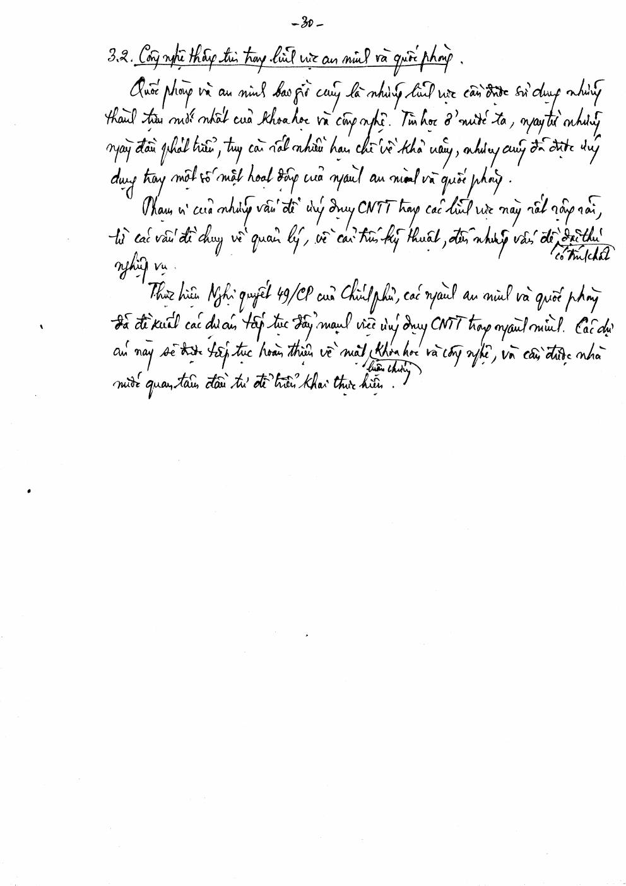
3.2. Công nghệ thông tin trong lĩnh vực an ninh và quốc phòng.
Quốc phòng và an ninh bao giờ cũng là những lĩnh vực cần được sử dụng những thành tựu mới nhất của khoa học và công nghệ. Tin học ở nước ta, ngay từ những ngày đầu phát triển, tuy còn rất nhiều hạn chế về khả năng, nhưng cũng đã được sử dụng trong một số mặt hoạt động của ngành an ninh và quốc phòng.
Phạm vi của những vấn đề ứng dụng CNTT trong các lĩnh vực này rất rộng rãi, từ các vấn đề chung về quản lý, về cải tiến kỹ thuật, đến những vấn đề có tính chất đặc thù nghiệp vụ.
Thực hiện Nghị quyết 49/CP của Chính phủ, các ngành an ninh và quốc phòng đã đề xuất các dự án tiếp tục đẩy mạnh việc ứng dụng CNTT trong ngành mình. Các dự án này sẽ được tiếp tục hoàn thiện về mặt khoa học và công nghệ, và cần được nhà nước quan tâm đầu tư để triển khai thực hiện.
3.2. Information technology in the field of security and national defense.
National defense and security have always been fields that need to make use of the newest achievements of science and technology. Informatics in our country, from the very first days of its development, though still very limited in capability, has nonetheless been used in a number of aspects of the activity of the security and national-defense sector.
The scope of the problems of applying IT in these fields is very broad, from general problems of management and of technical improvement, to problems of a specific professional nature.
In implementing Government Resolution 49/CP, the security and national-defense sectors have proposed projects to continue intensifying the application of IT within their own sectors. These projects will be further finalized in their scientific and technological aspects, and need the State's attention and investment to be deployed and implemented.
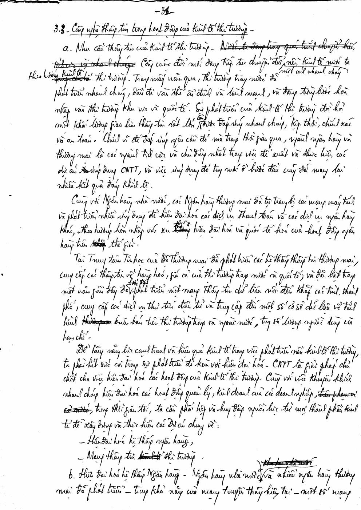
[Phần trên, cuối mục nhu cầu thông tin của kinh tế thị trường:] ... và an toàn. Chính vì thế mà trong thời gian qua, ngành ngân hàng và thương mại là các ngành đã có sự chủ động nhất trong việc đề xuất và thực hiện các dự án ứng dụng CNTT, và việc ứng dụng đó tuy mới ở bước đầu cũng đã mang lại nhiều kết quả đáng khích lệ.
Cùng với Ngân hàng nhà nước, các Ngân hàng thương mại đã tổ chức các mạng máy tính và phát triển nhiều ứng dụng để phục vụ các dịch vụ thanh toán và các nghiệp vụ ngân hàng khác, theo hướng hoà nhập với xu thế hiện đại hoá và quốc tế hoá của hoạt động ngân hàng hiện đại trên thế giới.
Tại Trung tâm Tin học của Bộ Thương mại đã phát triển các hệ thống thông tin thương mại, cung cấp các thông tin về hàng hoá, giá cả của thị trường trong nước và quốc tế; và đã bắt đầu một vài dịch vụ tin học, bước đầu triển khai một mạng thông tin thị trường, cả ở các thành phố, cung cấp các dịch vụ về thông tin thị trường và trong giai đoạn đầu một số cơ sở dữ liệu về tình hình buôn bán trên thị trường trong và ngoài nước, tuy số lượng người dùng còn hạn chế.
3.3. Công nghệ thông tin trong hoạt động của kinh tế thị trường.
a. Nhu cầu thông tin của kinh tế thị trường.
Công cuộc đổi mới đang tiếp tục chuyển đổi một cách nhanh chóng nền kinh tế nước ta theo hướng kinh tế thị trường. Trong mấy năm qua, thị trường trong nước đã phát triển nhanh chóng, dần đi vào thế ổn định và lành mạnh, và đang từng bước hoà nhập vào thị trường khu vực và quốc tế. Sự phát triển của kinh tế thị trường đòi hỏi một khối lượng giao lưu thông tin rất lớn, cần được đáp ứng nhanh chóng, kịp thời, chính xác và an toàn.
Để đẩy mạnh khả năng cạnh tranh và hiệu quả kinh tế trong việc phát triển nền kinh tế thị trường, sự phát triển phải đi kèm với hiện đại hoá - CNTT là giải pháp chủ chốt cho việc hiện đại hoá các hoạt động của kinh tế thị trường. Trong thời gian tới, các ngành dịch vụ, ngân hàng và thương mại và các thành phần kinh tế cần xây dựng và thực hiện các dự án chung về:
- Hiện đại hoá hệ thống ngân hàng,
- Mạng thông tin thị trường.
b. Hiện đại hoá hệ thống Ngân hàng.
Ngân hàng nhà nước và nhiều ngân hàng thương mại đã phát triển - tuy phải dựa trên nền của mạng truyền thông hiện tại - một số mạng ...
[Upper part, tail of the market-economy information-needs sub-item:] ... and secure. Precisely for this reason, in the recent period the banking and trade sectors have been the sectors most proactive in proposing and implementing IT-application projects, and although that application is still at an initial stage it has already brought many encouraging results.
Together with the State Bank, the commercial banks have organized computer networks and developed many applications to serve payment services and other banking operations, in the direction of integrating with the trend of modernization and internationalization of modern world banking activity.
At the Informatics Center of the Ministry of Trade, commercial-information systems have been developed, supplying information on goods and prices in the domestic and international markets; and a few informatics services have begun, initially deploying a market-information network, including in the cities, providing market-information services and, in the initial phase, a number of databases on the situation of trading in domestic and foreign markets, though the number of users is still limited.
3.3. Information technology in the activity of the market economy.
a. The information needs of the market economy.
The renovation cause is continuing to transform our country's economy rapidly toward a market economy. In the past few years, the domestic market has developed rapidly, gradually entering a stable and healthy state, and is step by step integrating into the regional and international market. The development of the market economy requires a very large volume of information exchange, which must be met rapidly, in timely fashion, accurately and securely.
To intensify the capacity for competition and economic efficiency in developing the market economy, development must go hand in hand with modernization - IT is the key solution for modernizing the activities of the market economy. In the coming period, the service sectors, banking and trade, and the economic sectors should build and implement joint projects on:
- Modernizing the banking system,
- The market-information network.
b. Modernizing the banking system.
The State Bank and many commercial banks have developed - though necessarily on the foundation of the present communications network - a number of networks ...
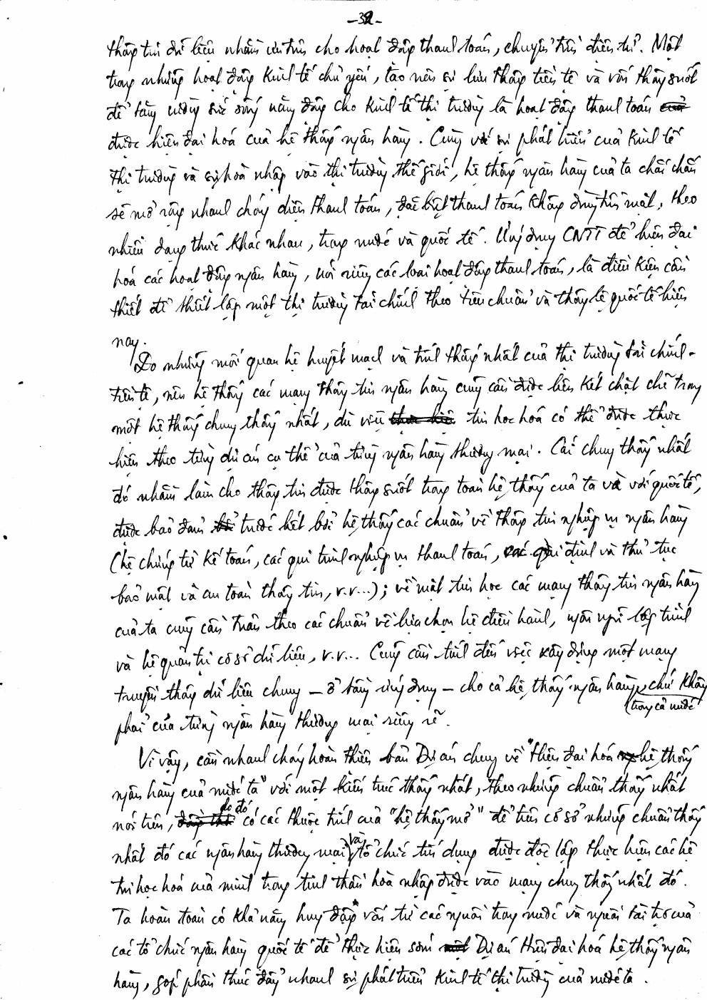
... truyền thông tin dữ liệu nhanh chóng cho hoạt động thanh toán, chuyển đổi tiền tệ - là một trong những hoạt động kinh tế chủ yếu - tạo nên cơ sở dữ liệu thông tin và các điều kiện thông suốt để tin học hoá hệ thống ngân hàng. Cùng với sự phát triển của kinh tế thị trường và sự hoà nhập với thị trường thế giới, hệ thống ngân hàng của ta cần cải tiến các dịch vụ và cập nhật các nghiệp vụ thanh toán, thực hiện thanh toán bù trừ điện tử, theo nhiều dạng thức khác nhau, trong nước và quốc tế. Ứng dụng CNTT để hiện đại hoá các hoạt động ngân hàng, với các loại hoạt động thanh toán, là điều kiện cần thiết để thiết lập một thị trường tài chính theo tiêu chuẩn và thể thức quốc tế hiện nay.
Do những mối quan hệ huyết mạch và tính thống nhất của thị trường tài chính - tiền tệ, nên hệ thống các máy tính ngân hàng cũng cần được liên kết chặt chẽ trong một hệ thống chung thống nhất, dù việc tin học hoá có thể được thực hiện phân tán ở cơ sở của từng ngân hàng thương mại. Cái chung thống nhất đó nhằm làm cho thông tin được thông suốt trong toàn hệ thống của ta và với quốc tế, được bảo đảm để tổ chức thực hiện các chuẩn về thông tin nghiệp vụ ngân hàng (kế toán, các quy trình nghiệp vụ thanh toán, các quy định về thủ tục bảo mật và an toàn thông tin, v.v...); và về mặt tin học, các mạng thông tin ngân hàng của ta cũng cần theo các chuẩn về hoà hợp hệ điều hành, ngôn ngữ lập trình và hệ quản trị cơ sở dữ liệu, v.v... Cũng cần tính đến việc xây dựng một mạng truyền thông dữ liệu chung cho cả hệ thống ngân hàng hơn là của từng ngân hàng thương mại riêng.
Vì vậy, cần nhanh chóng hoàn thiện bản Dự án chung về Hiện đại hoá hệ thống ngân hàng của nước ta với một kiến trúc thống nhất, theo những chuẩn thống nhất nói trên, có cả tinh thần của "hệ thống mở" để trên cơ sở những chuẩn thống nhất, các ngân hàng thương mại tự tổ chức lựa chọn được các thiết bị và các sản phẩm tin học, tự do thực hiện các phần mềm ứng dụng của mình mà vẫn đảm bảo tính thống nhất trong tổ chức thông tin. Ta hoàn toàn có khả năng huy động và tổ chức các nguồn lực trong nước và cả các tổ chức ngân hàng quốc tế để thực hiện sớm Dự án Hiện đại hoá hệ thống ngân hàng, góp phần thúc đẩy nhanh sự phát triển kinh tế thị trường của nước ta.
... rapid data transmission for payment and currency-conversion activities - one of the chief economic activities - forming the information database and the conditions of smoothness for informatizing the banking system. Together with the development of the market economy and integration into the world market, our banking system needs to improve its services and update payment operations, carrying out electronic clearing settlement in many different forms, domestically and internationally. Applying IT to modernize banking activities, with the various types of payment activity, is the necessary condition for establishing a financial market according to present international standards and formats.
Because of the vital interconnections and the unity of the financial-monetary market, the network of banking computers also needs to be tightly linked within a common unified system, even though informatization may be carried out in distributed fashion at the base of each commercial bank. That common unity aims to make information flow smoothly throughout our whole system and with the international one, ensured so as to organize the implementation of standards on banking professional information (accounting, payment-operation procedures, regulations on confidentiality and information-security procedures, etc.); and, as regards informatics, our banking information networks also need to follow standards on compatibility of operating systems, programming languages and database-management systems, etc. It is also necessary to consider building a common data-communications network for the whole banking system rather than each individual commercial bank's own.
Therefore, we must rapidly finalize the joint Project on Modernizing our country's banking system with a unified architecture, following the unified standards mentioned above, embodying the spirit of the "open system" so that, on the basis of unified standards, the commercial banks can themselves organize and select equipment and informatics products and freely implement their own application software while still ensuring unity in the organization of information. We are fully capable of mobilizing and organizing domestic resources as well as international banking organizations to implement early the Project to Modernize the banking system, contributing to accelerating the development of our country's market economy.
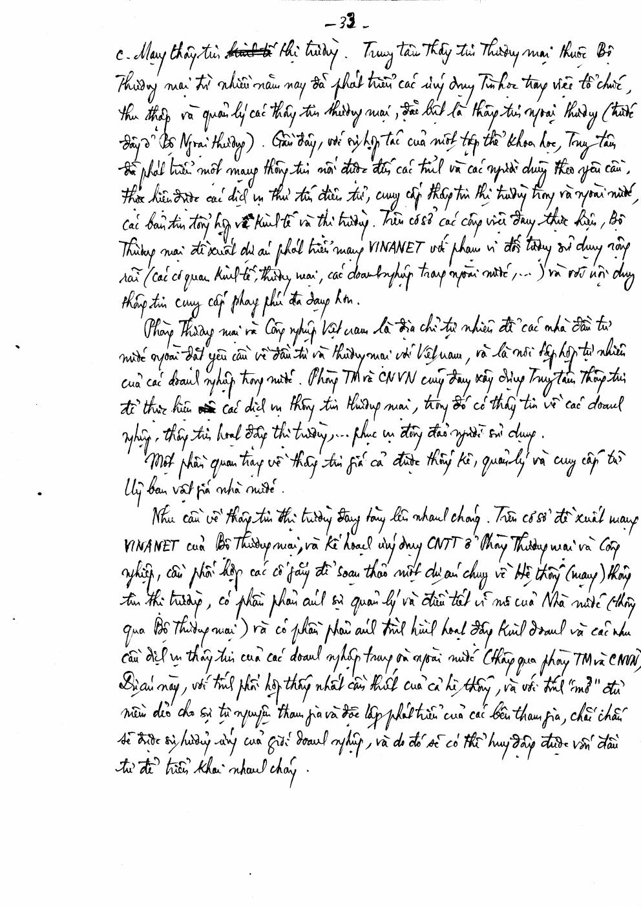
c. Mạng thông tin thị trường.
Trung tâm Thông tin Thương mại thuộc Bộ Thương mại từ nhiều năm nay đã phát triển các ứng dụng Tin học trong việc tổ chức, thu thập và quản lý các thông tin thương mại, đặc biệt là thông tin ngoại thương (thuộc Trung tâm Thông tin Ngoại thương). Gần đây, với sự hợp tác của một tập thể khoa học, Trung tâm đã phát triển một mạng thông tin nối được với các thị trường và các người dùng theo yêu cầu, cung cấp thông tin thị trường trong và ngoài nước, các bản tin tổng hợp về kinh tế và thị trường. Trên cơ sở các công việc đang thực hiện, Bộ Thương mại đã đề xuất đề án phát triển mạng VINANET với phạm vi sử dụng rộng rãi (các cơ quan kinh tế, thương mại, các doanh nghiệp trong và ngoài nước, ...) và với nội dung thông tin cung cấp phong phú, đa dạng hơn.
Phòng Thương mại và Công nghiệp Việt Nam là địa chỉ tin cậy mà nhiều nhà đầu tư nước ngoài đến với các yêu cầu về đầu tư và thương mại với Việt Nam, và là nơi tập hợp thông tin của nhiều doanh nghiệp trong nước. Phòng TM và CN VN cũng đang xây dựng Trung tâm Thông tin để thực hiện các dịch vụ về thông tin thương mại, trong đó có thông tin về các doanh nghiệp, thông tin hoạt động thị trường, ... phục vụ đông đảo người sử dụng.
Một phần quan trọng về thông tin giá cả được thống kê, quản lý và cung cấp từ Uỷ ban Vật giá nhà nước.
Nhu cầu về thông tin thị trường đang tăng lên nhanh chóng. Trên cơ sở đề xuất mạng VINANET của Bộ Thương mại, và kế hoạch ứng dụng CNTT ở Phòng Thương mại và Công nghiệp, cần phối hợp các cố gắng để soạn thảo một dự án chung về Hệ thống (mạng) thông tin thị trường, có phần quản lý và điều tiết của Nhà nước (thông qua Bộ Thương mại) và có phần phân tích tình hình hoạt động kinh doanh và các nhu cầu thông tin của các doanh nghiệp trong và ngoài nước (thông qua Phòng TM và CN VN). Dự án này, với tính phối hợp thống nhất cần thiết của cả hệ thống, và với tính "mở" cần nêu để đảm bảo sự tự nguyện tham gia và đóng góp của các bên, chắc chắn sẽ được sự hưởng ứng của giới doanh nghiệp, và do đó sẽ có thể huy động được vốn đầu tư để triển khai nhanh chóng.
c. The market information network.
For many years the Commercial Information Centre under the Ministry of Trade has developed IT applications in organizing, collecting and managing commercial information, especially foreign-trade information (belonging to the Foreign-Trade Information Centre). Recently, with the cooperation of a scientific team, the Centre has developed an information network connected to markets and to users on demand, supplying market information within the country and abroad and consolidated bulletins on the economy and the market. On the basis of the work being carried out, the Ministry of Trade has proposed a project to develop the VINANET network with a broad scope of use (economic and commercial agencies, enterprises at home and abroad, etc.) and with richer and more diverse information content.
The Chamber of Commerce and Industry of Vietnam is a trusted address to which many foreign investors come with requests concerning investment and trade with Vietnam, and it is a place that gathers information from many domestic enterprises. The Chamber of Commerce and Industry of Vietnam is also building an Information Centre to carry out services concerning commercial information, including information on enterprises and on market activity, serving a large body of users.
An important part of price information is compiled statistically, managed and supplied by the State Pricing Committee.
The demand for market information is growing rapidly. On the basis of the Ministry of Trade's proposed VINANET network and the IT-application plan of the Chamber of Commerce and Industry, joint efforts must be coordinated to draft a common project on a market Information System (network), with a component of management and regulation by the State (through the Ministry of Trade) and a component analyzing the state of business operations and the information needs of enterprises at home and abroad (through the Chamber of Commerce and Industry of Vietnam). This project, with the necessary unified coordination of the whole system and with the "open" character that must ensure the voluntary participation and contribution of the parties, will surely gain the response of the business community, and therefore will be able to mobilize investment capital for rapid implementation.
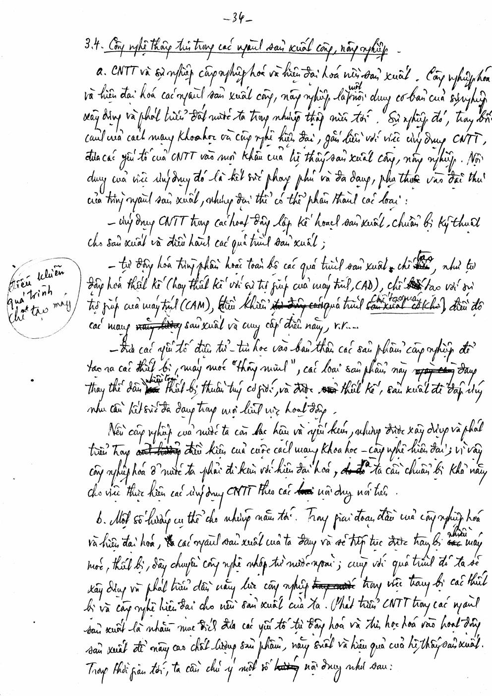
3.4. Công nghệ thông tin trong các ngành sản xuất, dịch vụ, công nghiệp.
a. CNTT và sự nghiệp công nghiệp hoá và hiện đại hoá nền sản xuất.
Công nghiệp hoá và hiện đại hoá các ngành sản xuất, công nghiệp, dịch vụ là nội dung cơ bản của sự nghiệp xây dựng và phát triển đất nước ta trong những thập niên tới. Sự nghiệp đó, trong bối cảnh của cách mạng khoa học và công nghệ hiện đại, gắn liền với việc ứng dụng CNTT. Việc ứng dụng đó đối với các ngành sản xuất, công nghiệp, dịch vụ là hết sức phong phú và đa dạng, gồm các loại nội dung sau đây:
- Ứng dụng CNTT trong các khâu thiết kế, kỹ thuật, hoạch định sản xuất, chuẩn bị kỹ thuật cho sản xuất và điều hành các quá trình sản xuất.
- Tự động hoá từng phần hoặc toàn bộ các quá trình sản xuất, chế tạo, như tự động hoá thiết kế (hay thiết kế với sự trợ giúp của máy tính, CAD), chế tạo với sự trợ giúp của máy tính (CAM), điều khiển tự động các quá trình chế tạo máy, điều độ các mạng sản xuất và cung cấp điện năng, v.v...
- Đưa các yếu tố điện tử - tin học vào bản thân các sản phẩm công nghiệp để tạo ra các thiết bị, máy "thông minh"; các loại sản phẩm này đang thay thế dần nhiều loại thiết bị thuần tuý cơ giới, và được thiết kế, sản xuất để đáp ứng nhu cầu hết sức đa dạng trong mọi lĩnh vực hoạt động.
Công nghệ phần cứng đòi hỏi đầu tư cơ bản lớn, và được xây dựng trên cơ sở một nền sản xuất công nghiệp hoá đã phát triển; ta cần tận dụng các khả năng của CNTT [?].
b. Một số hướng cơ bản để hiện đại hoá sản xuất.
Trong giai đoạn đầu của công nghiệp hoá và hiện đại hoá, các ngành sản xuất của ta đang và sẽ tiếp tục được trang bị nhiều máy móc, thiết bị, dây chuyền công nghệ nhập từ nước ngoài; cùng với quá trình đó ta sẽ xây dựng và phát triển dần năng lực công nghiệp trong việc trang bị các thiết bị và công nghệ hiện đại cho nền sản xuất của ta. Phát triển CNTT trong các ngành sản xuất sẽ được tổ chức thành các dự án riêng, hoặc là một bộ phận hợp thành trong các dự án về hiện đại hoá của các xí nghiệp, các cơ sở sản xuất.
Trong thời gian tới, ta cần chú ý một số nội dung ứng dụng như sau:
3.4. Information technology in the production, service and industrial sectors.
a. IT and the cause of industrialization and modernization of production.
Industrialization and modernization of the production, industrial and service sectors is a fundamental content of the cause of building and developing our country in the coming decades. That cause, in the context of the modern scientific and technological revolution, is bound up with the application of IT. That application to the production, industrial and service sectors is extremely rich and diverse, comprising the following kinds of content:
- Applying IT in the stages of design, engineering, production planning, technical preparation for production and management of production processes.
- Partial or full automation of production and manufacturing processes, such as design automation (or computer-aided design, CAD), computer-aided manufacturing (CAM), automatic control of machine-manufacturing processes, dispatching of production and power-supply networks, etc.
- Introducing electronic-informatic elements into the industrial products themselves to create "intelligent" equipment and machines; these kinds of products are gradually replacing many purely mechanical devices, and are designed and produced to meet extremely diverse needs in every field of activity.
Hardware technology requires large basic investment and is built on the basis of an already-developed industrialized production base; we must make full use of the possibilities of IT [?].
b. Some basic directions for modernizing production.
In the initial phase of industrialization and modernization, our production sectors are and will continue to be equipped with much machinery, equipment and technological production lines imported from abroad; alongside that process we shall gradually build and develop the industrial capacity to equip our production with modern equipment and technology. The development of IT in the production sectors will be organized into separate projects, or as a component part of the modernization projects of enterprises and production establishments.
In the coming period, we must pay attention to a number of application contents as follows:
[Trang này bị gạch xoá và sửa rất nhiều; nội dung về tự động hoá và "trí tuệ nhân tạo" phần lớn khó đọc, đọc với độ tin cậy thấp:]
- Thực hiện tự động hoá cho các nhóm và các dây chuyền thiết bị, thích hợp với đặc điểm của từng ngành, từng loại hình sản xuất; đưa cán bộ, kỹ sư của ta tham gia thiết kế và lắp đặt các dây chuyền sản xuất, chế tạo với sự trợ giúp của máy tính (thiết kế với sự trợ giúp của máy tính và chế tạo với sự trợ giúp của máy tính, tức là CAD/CAM). [?]
- Phát triển hướng nghiên cứu và ứng dụng "trí tuệ nhân tạo". Thiết kế các quá trình chế tạo là loại hoạt động trí tuệ cao; đối với một số ngành, một số công nghệ nhất định của ta, việc thiết kế các sản phẩm mới, các sản phẩm của công nghệ cao, có thể ứng dụng các phương pháp của trí tuệ nhân tạo và thiết kế tự động. [?]
Các hướng nói trên được tổ chức thành các đề tài hoặc các dự án, chuẩn bị lực lượng cho các ngành sản xuất và điều hành các quá trình sản xuất công nghiệp, với các phần mềm ứng dụng nhằm nâng cao hiệu quả của các hoạt động tổ chức và điều khiển các ngành sản xuất. [?]
c. Chính sách và biện pháp.
Việc ứng dụng CNTT trong khu vực sản xuất là công việc của các ngành sản xuất, các xí nghiệp và cơ sở sản xuất, dịch vụ thuộc mọi thành phần kinh tế. Nhà nước cần có chính sách ưu tiên đầu tư, cho vay vốn, miễn giảm thuế, ... đối với các dự án đưa CNTT vào các ngành sản xuất, dịch vụ với luận chứng rõ ràng về khả năng nâng cao chất lượng và hiệu quả.
Biện pháp quan trọng nhất trong lĩnh vực này là tăng cường đầu tư cho công tác đào tạo, nghiên cứu và triển khai, để có được một đội ngũ chuyên viên, kỹ sư, kỹ thuật viên có hiểu biết hiện đại về CNTT trong mỗi ngành sản xuất, dịch vụ, chủ động đưa được các tiến bộ CNTT vào từng lĩnh vực đặc thù của các ngành đó. Vì vậy, cần tăng cường chương trình đào tạo về CNTT cho các ngành kỹ thuật, kinh tế ở các trường Đại học, tăng cường các bộ phận nghiên cứu và triển khai về điều khiển tự động, tự động hoá thiết kế, v.v... ở các Viện nghiên cứu, các Trung tâm đào tạo nâng cao, và các Trung tâm phát triển phần mềm nói đến trong bản kế hoạch này.
[This page is very heavily crossed out and revised; the content on automation and "artificial intelligence" is largely hard to read, transcribed here with low confidence:]
- Carrying out automation for groups and lines of equipment, suited to the characteristics of each sector and each type of production; bringing our cadres and engineers to participate in designing and installing production and manufacturing lines with the aid of the computer (computer-aided design and computer-aided manufacturing, that is CAD/CAM). [?]
- Developing the direction of research and application of "artificial intelligence." Designing manufacturing processes is a kind of high-level intellectual activity; for certain sectors and technologies of ours, the design of new products and high-technology products may apply the methods of artificial intelligence and automated design. [?]
The directions mentioned above are organized into topics or projects, preparing the workforce for the production sectors and managing industrial production processes, with application software aimed at raising the effectiveness of the activities of organizing and controlling the production sectors. [?]
c. Policies and measures.
The application of IT in the production sphere is the work of the production sectors, of enterprises and production and service establishments of every economic sector. The State needs policies of priority investment, capital lending, tax exemption and reduction, etc., for projects that bring IT into the production and service sectors with clear justification of the capacity to raise quality and effectiveness.
The most important measure in this field is to increase investment in training, research and development, so as to obtain a corps of specialists, engineers and technicians with modern understanding of IT in each production and service sector, who can take the initiative in bringing IT advances into each particular field of those sectors. Therefore, the IT training program for the engineering and economic disciplines at universities must be strengthened, and the research-and-development units on automatic control, design automation, etc., at research institutes, advanced-training centres, and software-development centres mentioned in this plan must be strengthened.
3.5. Xây dựng hệ thống phát triển và ứng dụng CNTT ở các ngành và các địa phương.
a. Yêu cầu.
Nghị quyết 49/CP của Chính phủ đề cập đến việc phát triển CNTT trong cả nước, và đề ra việc triển khai nhiều dự án ứng dụng trong việc thực hiện Nghị quyết đó. Trong những năm qua, với sự phối hợp của Ban Chỉ đạo, việc phát triển CNTT đã diễn ra ở nhiều ngành, và đã đến cả các thành phố lớn. Thành phố Hồ Chí Minh, với các hoạt động kinh tế, thương mại của mình, nói chung là nơi CNTT được ứng dụng và phát triển tương đối, cũng là nơi có tiềm năng và nhu cầu to lớn trong việc phát triển và ứng dụng CNTT. [?]
Trong các phần được trình bày ở trên, bản kế hoạch tổng thể này mới đề cập được đến một số nội dung có tính chất chung trong phạm vi cả nước. Mỗi ngành, mỗi địa phương, căn cứ vào Nghị quyết 49/CP, vào hướng dẫn của Bộ trưởng Bộ KHCNMT (kiêm Trưởng ban chỉ đạo chương trình quốc gia về CNTT), và tham khảo bản kế hoạch tổng thể này để xây dựng Đề án kế hoạch về phát triển và ứng dụng CNTT của bộ, ngành hoặc địa phương mình.
b. Phối hợp hệ thống trong việc xây dựng kế hoạch của các ngành và các địa phương.
Việc phát triển và ứng dụng CNTT trong các ngành, địa phương cần phải được hoạch định trong sự phối hợp có tính chất hệ thống của toàn bộ Chương trình phát triển và ứng dụng CNTT ở cả nước ta. Cần đặc biệt lưu ý các yếu tố sau đây:
- Trong phần II của kế hoạch tổng thể này đã xác định các kế hoạch phát triển tiềm năng nhân lực cho CNTT, các biện pháp giáo dục, đào tạo, nghiên cứu và triển khai chung. Các ngành, địa phương cần tích cực tham gia và tận dụng kết quả của các biện pháp chung này, và chỉ phát triển riêng các hình thức đào tạo, nghiên cứu theo những yêu cầu đặc thù của mình.
- Việc xây dựng kết cấu hạ tầng về ứng dụng CNTT (như mạng truyền thông dữ liệu) và các biện pháp trong các dự án được triển khai, phải theo các chuẩn hệ thống mở được quy định cho toàn hệ thống trong cả nước.
- Các đề án ứng dụng CNTT trong quản lý hành chính quốc gia, quản lý kinh tế
3.5. Building the system for the development and application of IT in the sectors and localities.
a. Requirement.
Government Resolution 49/CP addresses the development of IT throughout the country, and sets out the deployment of many application projects in implementing that Resolution. In the past years, with the coordination of the Steering Committee, the development of IT has taken place in many sectors, and has reached the large cities. Ho Chi Minh City, with its economic and commercial activities, is in general a place where IT is relatively applied and developed; it is also a place with great potential and demand in the development and application of IT. [?]
In the parts presented above, this master plan has so far only addressed a number of contents of a general character within the nationwide scope. Each sector and each locality, on the basis of Resolution 49/CP, of the guidance of the Minister of Science, Technology and Environment (concurrently Head of the steering committee of the national program on IT), and with reference to this master plan, is to build the Plan Proposal on the development and application of IT of its own ministry, sector or locality.
b. Systemic coordination in building the plans of the sectors and localities.
The development and application of IT in the sectors and localities must be planned within the systemic coordination of the whole nationwide Program for the development and application of IT. The following factors must be especially noted:
- Part II of this master plan has determined the plans for developing the human-resource potential for IT and the general measures of education, training, research and development. The sectors and localities must actively participate in and make full use of the results of these general measures, and only separately develop the forms of training and research according to their own specific requirements.
- The building of the IT-application infrastructure (such as the data-communication network) and the measures in the projects being deployed must follow the open-system standards prescribed for the whole system throughout the country.
- The IT-application projects in national administrative management, economic management
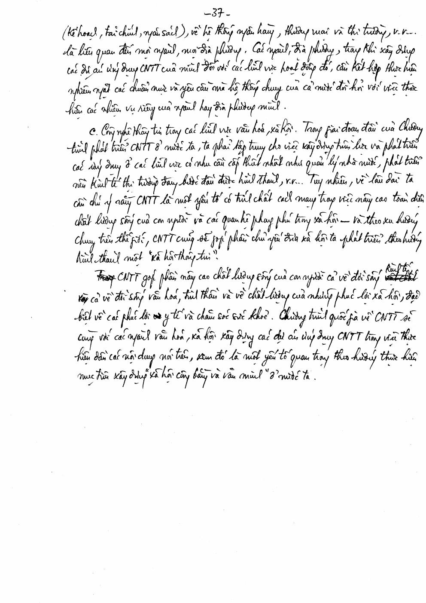
(kế hoạch, tài chính, ngân sách), về hệ thống ngân hàng, thương mại và thị trường, v.v... là những vấn đề mà mỗi ngành, mỗi địa phương, tuỳ theo các dự án ứng dụng CNTT của mình đối với các lĩnh vực hoạt động đó, đều cần có kế hoạch thực hiện, đảm bảo thoả mãn được yêu cầu hệ thống của toàn bộ Chương trình, đồng thời đáp ứng nhu cầu riêng của ngành hay địa phương mình. [?]
c. Công nghệ thông tin trong các lĩnh vực văn hoá, xã hội.
Trong giai đoạn đầu của chương trình phát triển CNTT ở nước ta, ta phải tập trung cho các ứng dụng ở các lĩnh vực có nhu cầu cấp thiết nhất như quản lý nhà nước, phát triển nền kinh tế thị trường đang bước đầu được hình thành, v.v... Tuy nhiên, về lâu dài ta cần chú ý rằng CNTT là một yếu tố có tính chất cách mạng trong việc nâng cao toàn diện chất lượng sống của con người và các quan hệ phong phú trong xã hội - và theo xu hướng chung trên thế giới, CNTT cũng sẽ góp phần chủ yếu đưa xã hội ta phát triển theo hướng hình thành một "xã hội thông tin".
CNTT góp phần nâng cao chất lượng sống của con người cả về đời sống kinh tế, cả về đời sống văn hoá, tinh thần và về chất lượng của những phúc lợi xã hội, đặc biệt về các phúc lợi y tế và chăm sóc sức khoẻ. Chương trình quốc gia về CNTT sẽ cùng với các ngành văn hoá, xã hội xây dựng các dự án ứng dụng CNTT trong việc thực hiện đầy đủ các nội dung nói trên, xem đó là một yếu tố quan trọng theo hướng thực hiện mục tiêu xây dựng "xã hội công bằng và văn minh" ở nước ta.
(planning, finance, budget), on the banking system, trade and the market, etc., are matters that each sector and each locality, according to their own IT-application projects for those fields of activity, all need to have plans to implement, ensuring that they satisfy the systemic requirements of the whole Program while also meeting the specific needs of their own sector or locality. [?]
c. Information technology in the fields of culture and society.
In the initial phase of the IT-development program in our country, we must concentrate on applications in the fields of most urgent need, such as State management and the development of the market economy now beginning to take shape, etc. However, in the long term we must note that IT is a factor of a revolutionary character in comprehensively raising the quality of human life and the rich relations in society - and following the general trend in the world, IT will also make a principal contribution in moving our society to develop toward the formation of an "information society".
IT contributes to raising the quality of human life both in economic life and in cultural and spiritual life and in the quality of social benefits, especially health and health-care benefits. The national program on IT will, together with the cultural and social sectors, build IT-application projects in fully realizing the contents mentioned above, regarding this as an important factor in the direction of realizing the goal of building a "just and civilized society" in our country.
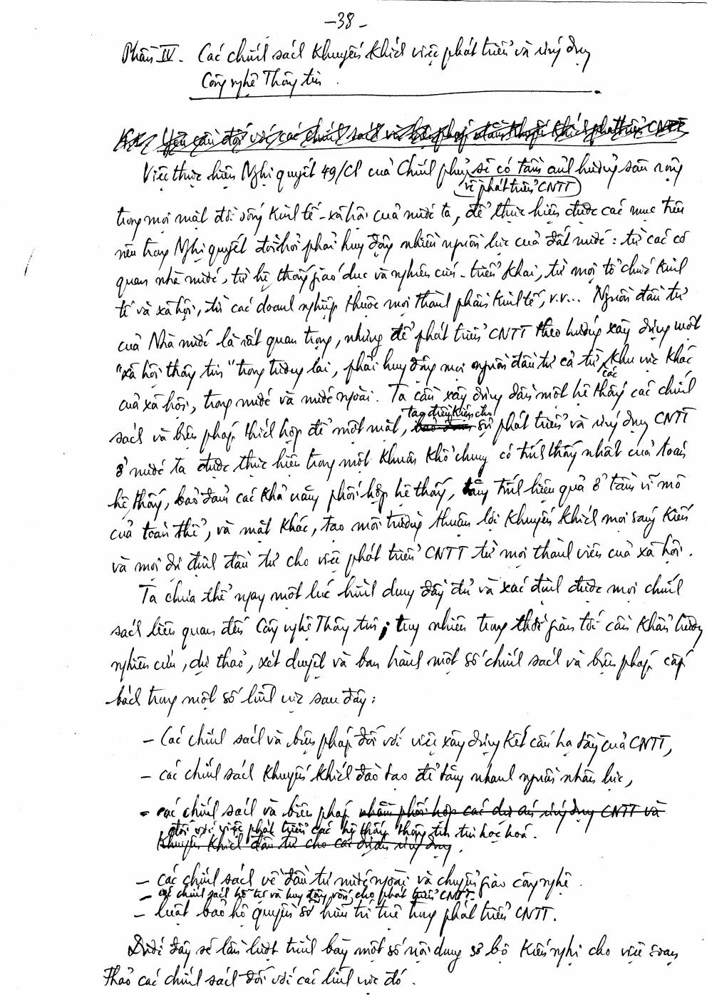
Phần IV. Các chính sách khuyến khích việc phát triển và ứng dụng Công nghệ thông tin.
Việc thực hiện Nghị quyết 49/CP của Chính phủ về phát triển và ứng dụng CNTT có tầm ảnh hưởng sâu rộng đến mọi mặt đời sống kinh tế - xã hội của nước ta; để thực hiện được các mục tiêu nêu trong Nghị quyết đòi hỏi phải huy động nhiều nguồn lực của đất nước: từ các cơ quan nhà nước, từ hệ thống giáo dục và nghiên cứu - triển khai, từ mọi tổ chức kinh tế và xã hội, từ các doanh nghiệp thuộc mọi thành phần kinh tế, v.v... Nguồn đầu tư của Nhà nước là rất quan trọng, nhưng để phát triển CNTT theo hướng xây dựng một "xã hội thông tin" trong tương lai, phải huy động mọi nguồn đầu tư cả từ các khu vực khác của xã hội, trong nước và nước ngoài. Ta cần xây dựng dần một hệ thống các chính sách và biện pháp thích hợp để một mặt tạo điều kiện cho sự phát triển và ứng dụng CNTT ở nước ta được thực hiện trong một khuôn khổ chung có tính thống nhất của toàn hệ thống, bảo đảm các khả năng phối hợp hệ thống, tăng tính hiệu quả ở tầm vĩ mô của toàn thể; và mặt khác, tạo môi trường thuận lợi khuyến khích mọi sáng kiến và mọi dự định đầu tư cho việc phát triển CNTT từ mọi thành viên của xã hội.
Ta chưa thể ngay một lúc hình dung đầy đủ và xác định được mọi chính sách liên quan đến Công nghệ Thông tin; tuy nhiên, trong thời gian tới cần khẩn trương nghiên cứu, dự thảo, xét duyệt và ban hành một số chính sách và biện pháp cấp bách trong một số lĩnh vực sau đây:
- Các chính sách và biện pháp đối với việc xây dựng kết cấu hạ tầng của CNTT,
- Các chính sách khuyến khích đào tạo tăng nhanh nguồn nhân lực,
- Các chính sách và biện pháp nhằm phát triển các hệ thống ứng dụng CNTT và khuyến khích ứng dụng CNTT trong các ngành sản xuất, dịch vụ, trong đó có các dự án tin học hoá,
- Các chính sách về chuyển giao công nghệ và hợp tác quốc tế,
- Luật bảo hộ quyền sở hữu trí tuệ trong phát triển CNTT.
Dưới đây, ta sẽ lần lượt trình bày một số nội dung về các chính sách chủ yếu và các biện pháp thực hiện các chính sách đó về các lĩnh vực nói trên.
Part IV. Policies to encourage the development and application of Information Technology.
The implementation of Government Resolution 49/CP on the development and application of IT has a deep and broad influence on every aspect of the socio-economic life of our country; to realize the goals set out in the Resolution requires mobilizing many of the country's resources: from State agencies, from the education and research-and-development system, from all economic and social organizations, from enterprises of every economic sector, etc. The State's source of investment is very important, but to develop IT in the direction of building an "information society" in the future, every source of investment must be mobilized, including from other sectors of society, at home and abroad. We must gradually build a system of appropriate policies and measures so that, on the one hand, the development and application of IT in our country is carried out within a common framework of a unified character across the whole system, ensuring the possibilities of systemic coordination and increasing effectiveness at the macro level of the whole; and, on the other hand, creating a favorable environment encouraging every initiative and every investment intention for the development of IT from every member of society.
We cannot at once fully envisage and determine all the policies related to Information Technology; however, in the coming period there is an urgent need to research, draft, review and promulgate a number of urgent policies and measures in the following fields:
- Policies and measures for building the infrastructure of IT,
- Policies to encourage training to rapidly increase the human-resource base,
- Policies and measures to develop IT-application systems and to encourage the application of IT in the production and service sectors, including informatization projects,
- Policies on technology transfer and international cooperation,
- Law on the protection of intellectual-property rights in the development of IT.
Below, we shall present in turn a number of contents on the principal policies and the measures for implementing those policies in the fields mentioned above.
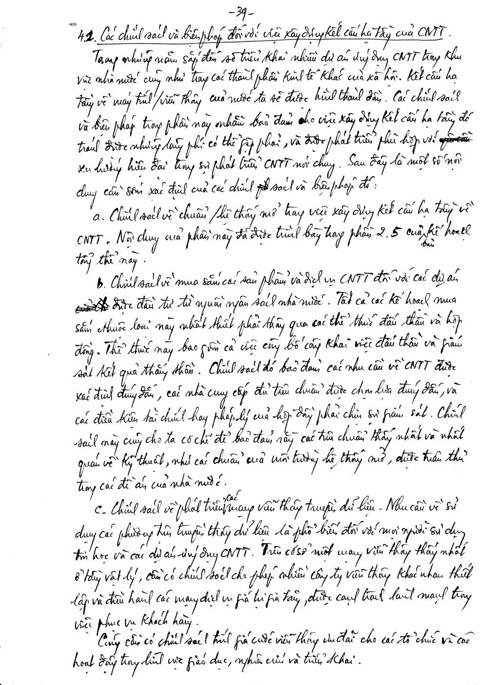
4.1. Các chính sách và biện pháp đối với việc xây dựng kết cấu hạ tầng của CNTT.
Trong những năm sắp đến sẽ triển khai nhiều dự án ứng dụng CNTT trong khu vực nhà nước cũng như trong các thành phần kinh tế khác của xã hội. Kết cấu hạ tầng về máy tính/viễn thông của nước ta sẽ được hình thành dần. Các chính sách và biện pháp trong phần này nhằm bảo đảm cho việc xây dựng kết cấu hạ tầng đó tránh được những lãng phí có thể gặp phải, và được phát triển phù hợp với xu hướng hiện đại trong sự phát triển CNTT nói chung. Sau đây là một số nội dung cần xác định của các chính sách và biện pháp đó:
a. Chính sách về chuẩn và hệ thống mở trong việc xây dựng kết cấu hạ tầng về CNTT.
Nội dung của phần này đã được trình bày trong phần 2.5 của bản kế hoạch tổng thể này.
b. Chính sách về mua sắm các sản phẩm và dịch vụ CNTT đối với các dự án được đầu tư từ nguồn ngân sách nhà nước.
Tất cả các kế hoạch mua sắm thuộc loại này nhất thiết phải thông qua các thể thức đấu thầu và hợp đồng. Thể thức này bao gồm cả việc công bố công khai, việc đấu thầu và giám sát kết quả đấu thầu. Chính sách đó bảo đảm các nhu cầu về CNTT được xác định đúng đắn, các nhà cung cấp đủ tiêu chuẩn được chọn lựa đúng đắn, và các điều kiện tài chính hay pháp lý của hợp đồng phải chịu sự giám sát. Chính sách này cũng cho ta cơ chế để bảo đảm rằng các tiêu chuẩn thống nhất và nhất quán về kỹ thuật, như các chuẩn của môi trường hệ thống mở, được tuân thủ trong các đề án của nhà nước.
c. Chính sách về phát triển các mạng viễn thông truyền dữ liệu.
Nhu cầu về sử dụng các phương tiện truyền thông dữ liệu là phổ biến đối với mọi người sử dụng tin học và các dự án ứng dụng CNTT. Trên cơ sở một mạng viễn thông thống nhất ở tầng vật lý, cho phép nhiều công ty viễn thông khác nhau thiết lập và điều hành các mạng dịch vụ giá trị gia tăng, được cạnh tranh lành mạnh trong việc phục vụ khách hàng.
Cùng đó, có chính sách tính giá cước viễn thông ưu đãi cho các tổ chức và các hoạt động trong lĩnh vực giáo dục, nghiên cứu và triển khai.
4.1. Policies and measures for building the infrastructure of IT.
In the coming years many IT-application projects will be deployed in the State sector as well as in the other economic sectors of society. Our country's computer/telecommunications infrastructure will gradually take shape. The policies and measures in this part aim to ensure that the building of that infrastructure avoids the waste that may be encountered, and is developed in keeping with the modern trends in the development of IT in general. The following are a number of contents to be determined for those policies and measures:
a. Policy on standards and open systems in building the IT infrastructure.
The content of this part has been presented in section 2.5 of this master plan.
b. Policy on the procurement of IT products and services for projects invested from the State budget source.
All procurement plans of this kind must necessarily go through the forms of bidding and contract. This form includes public announcement, the bidding, and the supervision of the bidding results. That policy ensures that IT needs are correctly determined, that qualified suppliers are correctly selected, and that the financial or legal conditions of the contract are subject to supervision. This policy also gives us a mechanism to ensure that unified and consistent technical standards, such as the standards of the open-system environment, are complied with in the State's projects.
c. Policy on the development of data-transmission telecommunications networks.
The need to use data-communication means is common to all users of informatics and to IT-application projects. On the basis of a unified telecommunications network at the physical layer, many different telecommunications companies are allowed to establish and operate value-added service networks, competing healthily in serving customers.
Together with this, there is a policy of preferential telecommunications-charge pricing for organizations and activities in the field of education, research and development.
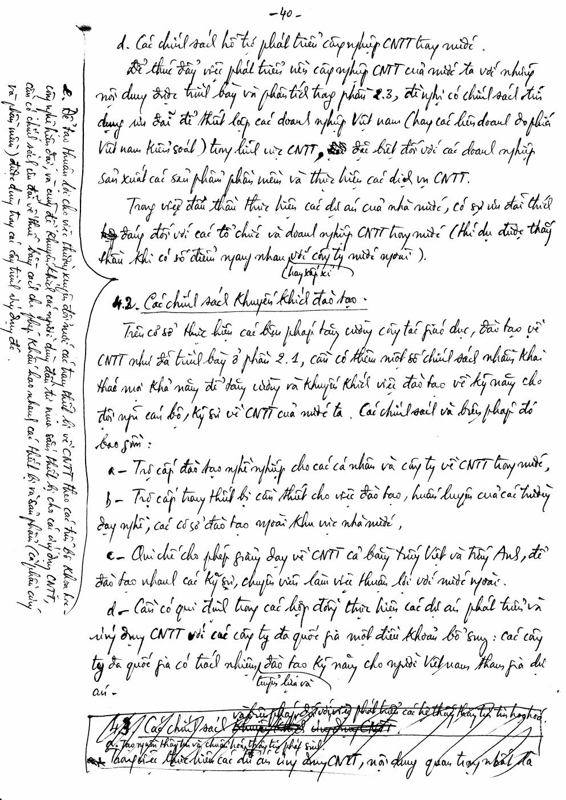
d. Các chính sách hỗ trợ phát triển công nghiệp CNTT trong nước.
Để thúc đẩy việc phát triển nền công nghiệp CNTT của nước ta và cũng nhằm mở rộng được thị trường và phần thị trường (xem phần 2.3), ta sẽ có chính sách tín dụng ưu đãi để thiết lập các doanh nghiệp Việt Nam (hay các liên doanh do phía Việt Nam kiểm soát) trong lĩnh vực CNTT, đặc biệt đối với các doanh nghiệp sản xuất các sản phẩm phần mềm và thực hiện các dịch vụ CNTT.
Trong việc đấu thầu thực hiện các dự án của nhà nước, có sự ưu đãi thích đáng đối với các tổ chức và doanh nghiệp CNTT trong nước (thí dụ được thắng thầu khi có số điểm ngang nhau với các công ty nước ngoài, hay tương tự).
4.2. Các chính sách khuyến khích đào tạo.
Trên cơ sở thực hiện các biện pháp tăng cường công tác giáo dục, đào tạo về CNTT như đã trình bày ở phần 2.1, cần có thêm một số chính sách nhằm khai thác mọi khả năng để tăng cường và khuyến khích việc đào tạo về kỹ năng cho đội ngũ cán bộ, kỹ sư về CNTT của nước ta. Các chính sách và biện pháp đó bao gồm:
a. Trợ cấp đào tạo nghề nghiệp cho các cá nhân và công ty về CNTT trong nước,
b. Trợ cấp trang thiết bị cần thiết cho việc đào tạo, huấn luyện của các trường dạy nghề, các cơ sở đào tạo ngoài khu vực nhà nước,
c. Quy chế cho phép giảng dạy về CNTT cả bằng tiếng Việt và tiếng Anh, để đào tạo nhanh các kỹ sư, chuyên viên làm việc thuận lợi với nước ngoài.
d. Các công ty đa quốc gia thực hiện các dự án phát triển và ứng dụng CNTT có trách nhiệm đào tạo tay nghề cho người Việt Nam, theo phần đề án ...
[Chú thích ở cuối trang, tương ứng chính sách về thuế và khấu hao: "Để tạo thuận lợi cho việc thường xuyên đổi mới các trang thiết bị về CNTT ..., cho phép khấu hao nhanh các thiết bị và sản phẩm (cả phần cứng và phần mềm) ..."]
d. Policies to support the development of the domestic IT industry.
To promote the development of our country's IT industry and also to expand the market and market share (see section 2.3), we shall have a preferential-credit policy to establish Vietnamese enterprises (or joint ventures controlled by the Vietnamese side) in the field of IT, especially for enterprises producing software products and performing IT services.
In the bidding for implementing the State's projects, there is appropriate preference for domestic IT organizations and enterprises (for example, being awarded the bid when scoring equal with foreign companies, or similar).
4.2. Policies to encourage training.
On the basis of carrying out the measures to strengthen IT education and training work as presented in section 2.1, a number of further policies are needed to exploit every possibility to strengthen and encourage skills training for our country's corps of IT cadres and engineers. Those policies and measures include:
a. Subsidies for vocational training for individuals and companies concerning IT within the country,
b. Subsidies for the equipment necessary for the training of vocational schools and training establishments outside the State sector,
c. A regulation permitting the teaching of IT in both Vietnamese and English, so as to rapidly train engineers and specialists able to work conveniently with foreign partners.
d. Multinational companies carrying out IT development and application projects are responsible for skills training for Vietnamese people, according to the project's terms ...
[A footnote at the bottom of the page, corresponding to the tax/depreciation policy: "In order to facilitate the frequent renewal of IT equipment ..., permitting accelerated depreciation of the equipment and products (both hardware and software) ..."]
4.3. Các chính sách và biện pháp đối với việc phát triển các hệ thống thông tin tin học hoá.
a. Tạo nguồn thông tin và chuẩn hoá các thông tin phát sinh.
Trong việc thực hiện các dự án ứng dụng CNTT, nội dung quan trọng nhất là xây dựng các hệ thống thông tin và cơ sở dữ liệu. Xác định các nguồn thông tin và chuẩn hoá các loại thông tin từ nguồn phát sinh là yêu cầu đầu tiên của việc thu thập thông tin cho việc xây dựng các hệ thống thông tin tin học hoá. Nghị quyết 49/CP đã quy định: Văn phòng Chính phủ chủ trì phối hợp với Tổng cục Thống kê, Uỷ ban Kế hoạch nhà nước, Bộ Khoa học, Công nghệ và Môi trường ban hành sớm quy định chuẩn hoá các loại thông tin cho các hoạt động quản lý điều hành quan trọng nhất của Nhà nước. Theo quy định chuẩn hoá thông tin đó, các Bộ, cơ quan ngang Bộ, các cơ quan thuộc Chính phủ, Uỷ ban nhân dân các tỉnh, thành phố trực thuộc Trung ương nghiên cứu ban hành các chuẩn thông tin trong hệ thống tin học phục vụ quản lý của mình. Các loại mẫu biểu và chế độ báo cáo, truyền đưa thông tin phải được cải tiến và bổ sung theo yêu cầu của ứng dụng CNTT. Việc thực hiện bắt buộc các chế độ về thông tin được thể chế hoá thành các quy định của pháp luật.
b. Trao đổi thông tin và bảo vệ thông tin.
Phát triển các hệ thống thông tin tin học hoá sẽ tăng nhanh chóng lưu lượng trao đổi thông tin trong nước cũng như với nước ngoài. Việc trao đổi và bảo vệ thông tin được tiến hành một cách phù hợp với chính sách mở cửa kinh tế của Nhà nước ta. Nghị quyết 49/CP quy định: Bộ Văn hoá - Thông tin chủ trì phối hợp với Bộ Nội vụ, Bộ Tư pháp nghiên cứu ban hành chính sách trao đổi và bảo vệ thông tin theo nguyên tắc: các thành phần kinh tế đều được bình đẳng trước pháp luật về quyền được thông tin và giao lưu thông tin ở trong nước cũng như với các cơ sở kinh tế ở nước ngoài nhằm phục vụ cho các hoạt động kinh doanh của mình; việc giao lưu thông tin với các tổ chức quốc tế và nước ngoài phải tuân theo các thông lệ quốc tế và pháp luật hiện hành của Nhà nước ta; quyền sở hữu và bí mật thông tin của cá nhân cũng như của các tổ chức kinh tế, xã hội cũng sẽ được thể chế hoá bằng pháp luật và thực hiện bằng các giải pháp khoa học.
4.3. Policies and measures for the development of informatized information systems.
a. Creating information sources and standardizing information generated at source.
In implementing IT application projects, the most important content is the building of information systems and databases. Identifying information sources and standardizing the types of information from their point of origin is the first requirement of information collection for building informatized information systems. Resolution 49/CP stipulated: the Government Office shall take the lead in coordination with the General Statistics Office, the State Planning Committee, and the Ministry of Science, Technology and Environment to promptly issue regulations standardizing the types of information for the most important State management and administration activities. In accordance with those information standardization regulations, the Ministries, ministerial-level agencies, agencies under the Government, and the People's Committees of the provinces and centrally-run cities shall study and issue information standards within the computerized systems serving their own management. The various forms and reporting regimes, and the transmission of information, must be improved and supplemented in accordance with the requirements of IT application. The mandatory implementation of information regimes shall be institutionalized into provisions of law.
b. Information exchange and information protection.
Developing informatized information systems will rapidly increase the volume of information exchange domestically as well as with foreign countries. The exchange and protection of information shall be carried out in a manner consistent with the economic open-door policy of our State. Resolution 49/CP stipulates: the Ministry of Culture and Information shall take the lead in coordination with the Ministry of the Interior and the Ministry of Justice to study and issue policies on the exchange and protection of information according to the principle: all economic sectors are equal before the law with respect to the right to information and to the exchange of information domestically as well as with economic establishments abroad in order to serve their own business activities; the exchange of information with international and foreign organizations must comply with international practices and the current law of our State; the ownership rights and confidentiality of information of individuals as well as of economic and social organizations shall also be institutionalized by law and implemented by scientific solutions.
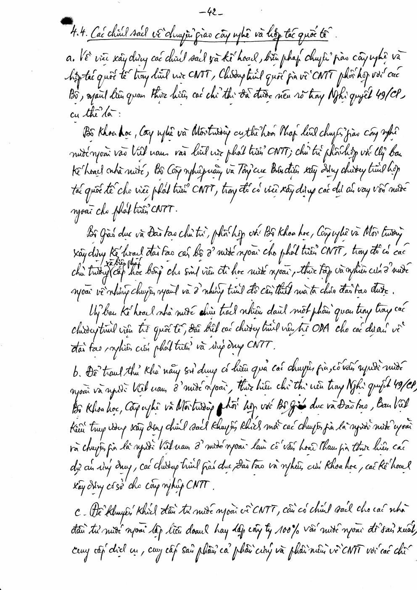
4.4. Các chính sách về chuyển giao công nghệ và hợp tác quốc tế.
a. Về việc xây dựng các chính sách, kế hoạch, biện pháp chuyển giao công nghệ và hợp tác quốc tế trong ứng dụng và phát triển CNTT, Chương trình quốc gia về CNTT phối hợp với các Bộ, ngành liên quan thực hiện các chỉ thị đã được nêu rõ trong Nghị quyết 49/CP, cụ thể là:
Bộ Khoa học, Công nghệ và Môi trường cụ thể hoá Pháp lệnh chuyển giao công nghệ nước ngoài vào Việt Nam trong lĩnh vực phát triển CNTT; chủ trì phối hợp với Uỷ ban Kế hoạch nhà nước, Bộ Công nghiệp nặng và Tổng cục Bưu điện xây dựng chương trình hợp tác quốc tế cho việc phát triển CNTT, trong đó có việc xây dựng các dự án vay vốn nước ngoài cho phát triển CNTT.
Bộ Giáo dục và Đào tạo chủ trì, phối hợp với Bộ Khoa học, Công nghệ và Môi trường xây dựng kế hoạch đào tạo cán bộ ở nước ngoài cho phát triển CNTT, trong đó có các chủ trương và biện pháp cấp học bổng cho sinh viên đi học nước ngoài, thực tập và nghiên cứu ở nước ngoài về những chuyên ngành và ở những trình độ cần thiết mà ta chưa đào tạo được.
Uỷ ban Kế hoạch nhà nước chịu trách nhiệm dành một phần quan trọng trong các chương trình viện trợ quốc tế, đặc biệt các chương trình viện trợ ODA cho các dự án về đào tạo, nghiên cứu phát triển và ứng dụng CNTT.
b. Để tranh thủ khả năng sử dụng có hiệu quả các chuyên gia, cố vấn người nước ngoài và người Việt Nam ở nước ngoài, thực hiện chỉ thị nêu trong Nghị quyết 49/CP, Bộ Khoa học, Công nghệ và Môi trường phối hợp với Bộ Giáo dục và Đào tạo, Ban Việt Kiều trung ương xây dựng chính sách khuyến khích mời các chuyên gia là người nước ngoài và chuyên gia là người Việt Nam ở nước ngoài làm cố vấn hoặc tham gia thực hiện các dự án ứng dụng, các chương trình giáo dục đào tạo và nghiên cứu khoa học, các kế hoạch xây dựng cơ sở cho công nghiệp CNTT.
c. Để khuyến khích đầu tư nước ngoài về CNTT, cần có chính sách cho các nhà đầu tư nước ngoài lập liên doanh hay lập công ty 100% vốn nước ngoài để sản xuất, cung cấp dịch vụ, cung cấp sản phẩm cả phần cứng và phần mềm về CNTT với các chế độ ưu
4.4. Policies on technology transfer and international cooperation.
a. Regarding the building of policies, plans, and measures for technology transfer and international cooperation in the application and development of IT, the National Program on IT shall coordinate with the relevant Ministries and branches to implement the directives clearly stated in Resolution 49/CP, specifically:
The Ministry of Science, Technology and Environment shall give concrete effect to the Ordinance on the transfer of foreign technology into Vietnam in the field of IT development; and shall take the lead in coordination with the State Planning Committee, the Ministry of Heavy Industry, and the General Department of Posts to build an international cooperation program for IT development, including the building of foreign-loan projects for IT development.
The Ministry of Education and Training shall take the lead, in coordination with the Ministry of Science, Technology and Environment, to build a plan for training cadres abroad for IT development, including the policies and measures for granting scholarships for students to study abroad, and to intern and conduct research abroad in the specialties and at the levels that are necessary and that we are not yet able to train.
The State Planning Committee shall be responsible for allocating an important portion of international aid programs, especially ODA aid programs, to projects on training, research and development, and application of IT.
b. In order to make effective use of foreign experts and advisers and of Vietnamese abroad, and to implement the directive stated in Resolution 49/CP, the Ministry of Science, Technology and Environment shall coordinate with the Ministry of Education and Training and the Central Committee for Overseas Vietnamese to build a policy encouraging the invitation of experts who are foreigners and experts who are Vietnamese abroad to serve as advisers or to participate in implementing application projects, education and training programs and scientific research, and plans for building the foundations of the IT industry.
c. In order to encourage foreign investment in IT, there needs to be a policy allowing foreign investors to establish joint ventures or to establish companies with 100% foreign capital to produce, provide services, and provide products, both hardware and software, in IT, with the preferential [regimes ...
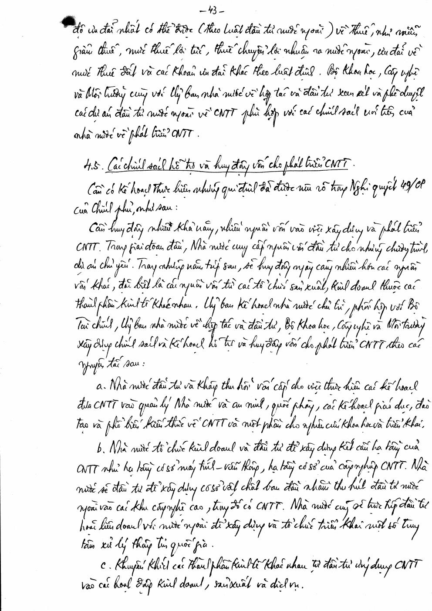
... đãi nhất có thể được (theo Luật đầu tư nước ngoài) về thuế như miễn giảm thuế, giảm mức thuế lợi tức, thuế chuyển lợi nhuận ra nước ngoài, ưu đãi về mức thuế đất và các khoản ưu đãi khác theo luật định. Bộ Khoa học, Công nghệ và Môi trường cùng với Uỷ ban nhà nước về hợp tác và đầu tư xem xét và phê duyệt các dự án đầu tư nước ngoài về CNTT phù hợp với các chính sách nói trên của nhà nước về phát triển CNTT.
4.5. Các chính sách hỗ trợ và huy động vốn cho phát triển CNTT.
Cần có kế hoạch thực hiện những quy định đã được nêu rõ trong Nghị quyết 49/CP của Chính phủ, như sau:
Cần huy động nhiều khả năng, nhiều nguồn vốn vào việc xây dựng và phát triển CNTT. Trong giai đoạn đầu, Nhà nước cung cấp nguồn vốn đầu tư cho những chương trình, dự án chủ yếu. Trong những năm tiếp sau, sẽ huy động ngày càng nhiều hơn các nguồn vốn khác, đặc biệt là các nguồn vốn từ các tổ chức sản xuất, kinh doanh thuộc các thành phần kinh tế khác nhau. Uỷ ban Kế hoạch nhà nước chủ trì, phối hợp với Bộ Tài chính, Uỷ ban nhà nước về hợp tác và đầu tư, Bộ Khoa học, Công nghệ và Môi trường xây dựng chính sách và kế hoạch hỗ trợ và huy động vốn cho phát triển CNTT theo các nguyên tắc sau:
a. Nhà nước đầu tư và không thu hồi vốn cấp cho việc thực hiện các kế hoạch đưa CNTT vào quản lý Nhà nước và an ninh, quốc phòng, các kế hoạch giáo dục, đào tạo và phổ biến kiến thức về CNTT và một phần cho nghiên cứu khoa học và triển khai.
b. Nhà nước tổ chức kinh doanh và đầu tư để xây dựng kết cấu hạ tầng của CNTT như hạ tầng cơ sở máy tính - viễn thông, hạ tầng cơ sở của công nghiệp CNTT. Nhà nước sẽ đầu tư để xây dựng cơ sở vật chất ban đầu nhằm thu hút đầu tư nước ngoài vào các khu công nghệ cao, trong đó có CNTT. Nhà nước cũng sẽ trực tiếp đầu tư hoặc liên doanh với nước ngoài để xây dựng và tổ chức triển khai một số trung tâm xử lý thông tin quốc gia.
c. Khuyến khích các thành phần kinh tế khác nhau tự đầu tư ứng dụng CNTT vào các hoạt động kinh doanh, sản xuất và dịch vụ.
... most preferential possible (in accordance with the Law on Foreign Investment) regarding taxes, such as tax exemption and reduction, reduction of the profit tax rate and the tax on transferring profits abroad, preference on the land tax rate, and other preferences as prescribed by law. The Ministry of Science, Technology and Environment, together with the State Committee for Cooperation and Investment, shall examine and approve foreign investment projects in IT in conformity with the aforementioned policies of the State on IT development.
4.5. Policies for supporting and mobilizing capital for IT development.
There needs to be a plan to implement the provisions clearly stated in Resolution 49/CP of the Government, as follows:
Many capacities and many sources of capital need to be mobilized for the building and development of IT. In the initial stage, the State provides the investment capital for the principal programs and projects. In the following years, other sources of capital will be increasingly mobilized, especially capital from production and business organizations of the various economic sectors. The State Planning Committee shall take the lead, in coordination with the Ministry of Finance, the State Committee for Cooperation and Investment, and the Ministry of Science, Technology and Environment, to build policies and plans for supporting and mobilizing capital for IT development according to the following principles:
a. The State invests and does not recover the capital allocated for implementing the plans to bring IT into State management and security and national defense, the plans for education, training, and dissemination of knowledge about IT, and a part for scientific research and development.
b. The State organizes business and investment to build the infrastructure of IT, such as the computer-telecommunications infrastructure and the infrastructure of the IT industry. The State will invest to build the initial material facilities in order to attract foreign investment into the high-technology zones, including IT. The State will also directly invest or enter joint ventures with foreign parties to build and organize the deployment of a number of national information-processing centers.
c. Encouraging the various economic sectors to invest on their own in applying IT to business, production, and service activities.
Bộ Tài chính chủ trì phối hợp với Uỷ ban Kế hoạch nhà nước, Ngân hàng nhà nước, Bộ Thương mại, Bộ Khoa học, Công nghệ và Môi trường nghiên cứu ban hành chính sách, chế độ khuyến khích các thành phần kinh tế tham gia ngày càng nhiều vào việc xây dựng, phát triển và ứng dụng CNTT.
4.6. Chính sách bảo vệ sở hữu trí tuệ và quyền tác giả.
Bảo vệ sở hữu trí tuệ và quyền tác giả trong lĩnh vực CNTT, đặc biệt đối với các sản phẩm phần mềm, là một yêu cầu cần được tôn trọng để tạo môi trường lành mạnh cho sự phát triển nhanh ngành CNTT ở nước ta.
Bảo vệ sở hữu trí tuệ và quyền tác giả trong lĩnh vực CNTT ở nước ta được thực hiện theo các quy định chung của Nhà nước về bảo vệ sở hữu trí tuệ và quyền tác giả, đồng thời phù hợp với các thông lệ và luật lệ quốc tế được thừa nhận trong lĩnh vực này. [?]
Ở Việt Nam, từ chỗ ít nhiều bảo vệ sở hữu trí tuệ và quyền tác giả đến việc bảo vệ chúng theo các quy định chung của Nhà nước và phù hợp với luật lệ quốc tế, là một quá trình đòi hỏi phải chuẩn bị và tiến hành từng bước. [?]
Nghị quyết 49/CP đã nêu rõ Chính phủ Việt Nam sẵn sàng tham gia các Điều ước quốc tế có liên quan đến chuyển giao công nghệ và sở hữu công nghiệp trong lĩnh vực CNTT. Nhà nước ta đã thông qua Pháp lệnh về bảo vệ quyền tác giả và quyền sở hữu trí tuệ. Trên tinh thần đó, Bộ Khoa học, Công nghệ và Môi trường phối hợp với Bộ Văn hoá - Thông tin chuẩn bị dự thảo để trình Chính phủ ban hành các quy định cụ thể về việc thực hiện Pháp lệnh đó trong lĩnh vực CNTT.
The Ministry of Finance shall take the lead in coordination with the State Planning Committee, the State Bank, the Ministry of Trade, and the Ministry of Science, Technology and Environment to study and issue policies and regimes encouraging the economic sectors to participate increasingly in the building, development, and application of IT.
4.6. Policy on protecting intellectual property and copyright.
Protecting intellectual property and copyright in the field of IT, especially with respect to software products, is a requirement that needs to be respected in order to create a healthy environment for the rapid development of the IT industry in our country.
The protection of intellectual property and copyright in the field of IT in our country shall be carried out in accordance with the general provisions of the State on the protection of intellectual property and copyright, and at the same time in conformity with the internationally recognized practices and rules in this field. [?]
In Vietnam, moving from a situation of more-or-less protecting intellectual property and copyright to protecting them in accordance with the general provisions of the State and in conformity with international rules is a process that requires preparation and step-by-step implementation. [?]
Resolution 49/CP made clear that the Government of Vietnam is ready to accede to the international treaties relating to technology transfer and industrial property in the field of IT. Our State has passed the Ordinance on the protection of copyright and intellectual property rights. In that spirit, the Ministry of Science, Technology and Environment shall coordinate with the Ministry of Culture and Information to prepare a draft for submission to the Government to issue specific regulations on the implementation of that Ordinance in the field of IT.
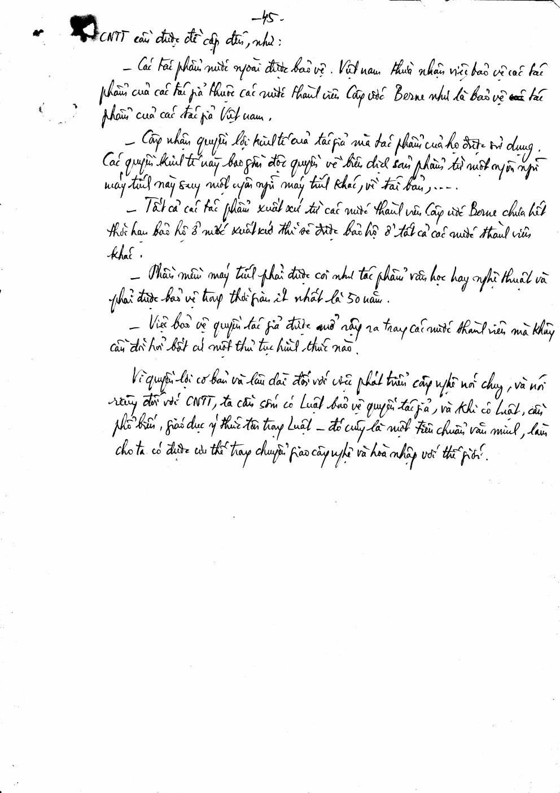
[Đầu trang tiếp nối một danh sách các nguyên tắc quốc tế về bản quyền cần được đề cập đến trong lĩnh vực] CNTT, như:
- Các tác phẩm nước ngoài được bảo vệ. Việt Nam thừa nhận việc bảo vệ các tác phẩm của các tác giả thuộc các nước thành viên Công ước Berne như là bảo vệ các tác phẩm của các tác giả Việt Nam.
- Công nhận quyền lợi trí tuệ của tác giả mà tác phẩm của họ được đưa vào dùng. Các quyền kinh tế này bao gồm độc quyền về việc chép sao tác phẩm, chuyển từ một ngôn ngữ máy tính này sang một ngôn ngữ máy tính khác, về tái bản, ...
- Tất cả các tác phẩm xuất xứ từ các nước thành viên Công ước Berne chưa hết thời hạn bảo hộ ở nước xuất xứ thì sẽ được bảo hộ ở tất cả các nước thành viên khác.
- Phần mềm máy tính phải được coi như tác phẩm văn học hay nghệ thuật và phải được bảo vệ trong thời hạn ít nhất là 50 năm.
- Việc bảo vệ quyền tác giả được suy ra ngay từ trong các nước thành viên mà không cần đòi hỏi bất cứ một thủ tục hình thức nào.
Vì quyền lợi cơ bản và lâu dài đối với việc phát triển công nghệ nói chung, và nói riêng đối với CNTT, ta cần sớm có Luật bảo vệ quyền tác giả; và khi có Luật, cần phổ biến, giáo dục để thực thi Luật - đó cũng là một tiêu chuẩn văn minh, làm cho ta có được cái thế trong chuyển giao công nghệ và hoà nhập với thế giới.
[The top of the page continues a list of international copyright principles that need to be addressed in the field of] IT, such as:
- Foreign works are protected. Vietnam recognizes the protection of the works of authors belonging to the member countries of the Berne Convention in the same way as the protection of the works of Vietnamese authors.
- Recognizing the intellectual rights of the author whose work is put into use. These economic rights include the exclusive right to copy a work, to convert it from one computer language into another, to republish, etc.
- All works originating from member countries of the Berne Convention whose term of protection has not yet expired in the country of origin shall be protected in all other member countries.
- Computer software must be regarded as a literary or artistic work and must be protected for a term of at least 50 years.
- The protection of copyright is inferred directly within the member countries without requiring any formal procedure whatsoever.
For the fundamental and long-term interest of the development of technology in general, and of IT in particular, we need to soon have a Law on the protection of copyright; and when we have the Law, it needs to be disseminated and taught so as to be enforced - this is also a standard of civilization, giving us standing in technology transfer and integration with the world.